<!doctype html>
<html lang="en">
<head>
  <meta charset="utf-8">
  <meta name="viewport" content="width=device-width, initial-scale=1">
  <title>arxiv digest — 2026-09-24</title>
  <style>
:root {
  --bg: #ffffff;
  --fg: #1f2328;
  --muted: #59636e;
  --border: #d0d7de;
  --card: #f6f8fa;
  --link: #0969da;
}
body {
  max-width: 980px;
  margin: 0 auto;
  padding: 2rem 1rem 5rem;
  font-family: -apple-system, BlinkMacSystemFont, "Segoe UI", Helvetica, Arial, sans-serif;
  line-height: 1.55;
  color: var(--fg);
  background: var(--bg);
}
a { color: var(--link); }
img { max-width: 100%; height: auto; }
pre, code { background: var(--card); border-radius: 6px; }
pre { padding: 1rem; overflow-x: auto; }
blockquote { border-left: 4px solid var(--border); padding-left: 1rem; color: var(--muted); }
details { margin: 0.6rem 0; }
summary { cursor: pointer; font-weight: 600; }
.paper-figures-scroll {
  display: flex;
  gap: 1rem;
  overflow-x: auto;
  overscroll-behavior-x: contain;
  padding: 0.75rem 0.25rem 1rem;
  margin: 1rem 0 1.25rem;
  border-top: 1px solid var(--border);
  border-bottom: 1px solid var(--border);
  scroll-snap-type: x proximity;
}
.paper-figure-card {
  flex: 0 0 min(260px, 72vw);
  scroll-snap-align: start;
  background: var(--card);
  border: 1px solid var(--border);
  border-radius: 12px;
  padding: 0.55rem;
}
.paper-figure-card img {
  display: block;
  width: 100%;
  max-height: 240px;
  object-fit: contain;
  background: white;
  border-radius: 8px;
}
.paper-figure-caption {
  display: block;
  margin-top: 0.5rem;
  color: var(--muted);
  font-size: 0.85rem;
}
.figure-strip-hint {
  color: var(--muted);
  font-size: 0.9rem;
  margin-bottom: -0.3rem;
}
</style>
  <!-- MathJax: renders $...$ inline math and $$...$$ display math, plus
       \(...\) and \[...\]. Loaded from the official CDN; works offline
       once cached. Configured to skip code/pre blocks so arxiv IDs that
       look like dollar amounts don't get mangled. -->
  <script>
    window.MathJax = {
      tex: {
        inlineMath: [['$', '$'], ['\\(', '\\)']],
        displayMath: [['$$', '$$'], ['\\[', '\\]']],
        processEscapes: true,
        processEnvironments: true
      },
      options: {
        skipHtmlTags: ['script', 'noscript', 'style', 'textarea', 'pre', 'code'],
        ignoreHtmlClass: 'tex2jax_ignore',
        processHtmlClass: 'tex2jax_process'
      }
    };
  </script>
  <script id="MathJax-script" async
    src="https://cdn.jsdelivr.net/npm/mathjax@3/es5/tex-chtml.js"></script>
</head>
<body>
<header style="background-color: #333; color: white; padding: 15px; margin-bottom: 20px;">
  <h1 style="margin: 0; font-size: 24px;">
    <a href="https://ochelpan.github.io/arXiv_clean/" style="color: white; text-decoration: none;">Main</a>
  </h1>
</header>

<h1>Daily arXiv Report</h1>

<hr>
<p>
<a href="index.html">← Index</a>
 · <a href="papers_01.html">← Previous</a> · <a href="papers_03.html">Next →</a>
</p>
<hr>

<h2>Papers 21–40</h2>
<p><a id="paper-2609.26516"></a></p>
<h3 id="tensor-network-simulation-of-dynamic-circuits"><a href="http://arxiv.org/abs/2609.26516v1">Tensor Network Simulation of Dynamic Circuits</a></h3>
<p><strong>Authors:</strong> Innocenzo Fulginiti, Alessandro Poggiali, Christian Mendl<br>
<strong>Type:</strong> theory · <strong>Category:</strong> numerical methods · <strong>PDF:</strong> <a href="https://arxiv.org/pdf/2609.26516v1">https://arxiv.org/pdf/2609.26516v1</a><br>
<strong>Analysis basis:</strong> full PDF text, analyzed in chunks
<strong>Topic relevance:</strong> 🔥 <code>methods for driven-dissipative</code> <strong>4/5</strong> · <code>quantum measurements</code> <strong>3/5</strong></p>
<div class="figure-strip-hint">↔ Scroll figures horizontally</div>
<div class="paper-figures-scroll">
<figure class="paper-figure-card">
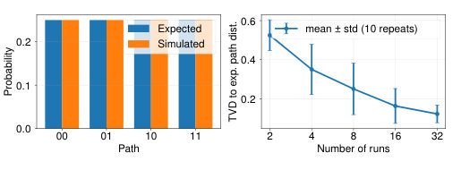
<figcaption class="paper-figure-caption"><b>Fig 1.</b> Figure 1: Teleportation protocol benchmark without final mea- surement on Bob’s qubit. Fig. 1a reports the expected and simulated probabilities of the four execution paths using the multi-path simulator. Fig. 1b reports the TVD between the expected and the empirical path distribution obtained with the single-path simulator for different numbers of runs.</figcaption>
</figure>
<figure class="paper-figure-card">
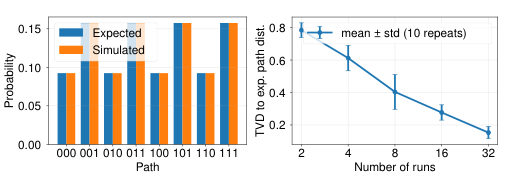
<figcaption class="paper-figure-caption"><b>Fig 2.</b> Figure 2: Teleportation protocol benchmark with final mea- surement on Bob’s qubit. Fig. 2a reports the expected and simulated probabilities of the eight execution paths using the multi-path simulator. Fig. 2b reports the TVD between the expected and the empirical path distribution obtained with the single-path simulator for different numbers of runs.</figcaption>
</figure>
<figure class="paper-figure-card">
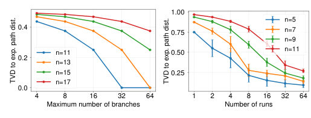
<figcaption class="paper-figure-caption"><b>Fig 3.</b> Figure 3: TVD between the simulated and expected path distributions for the dynamic GHZ preparation benchmark. Fig. 3a shows the multi-path simulation with branch trunca- tion. Fig. 3b shows the single-path simulation, reporting the mean and standard deviation of 10 executions for each settings.</figcaption>
</figure>
<figure class="paper-figure-card">
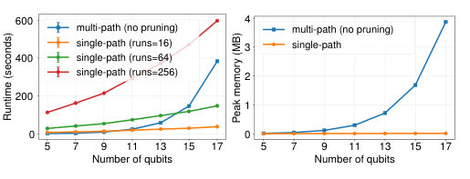
<figcaption class="paper-figure-caption"><b>Fig 4.</b> Figure 4: Computational cost of the dynamic GHZ prepara- tion benchmark: runtime (Fig. 4a) and peak memory usage (Fig. 4b) as a function of qubit count, averaged over 10 independent runs.</figcaption>
</figure>
<figure class="paper-figure-card">
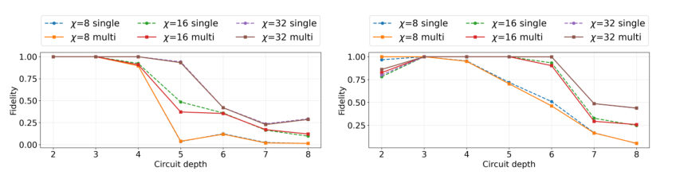
<figcaption class="paper-figure-caption"><b>Fig 5.</b> Figure 5: Simulation fidelity for 27-qubit random dynamic circuits (see Tab. I), using MPS (a) and TTN (b) representations.</figcaption>
</figure>
</div>

<p><strong>Summary.</strong> This paper presents a tensor network framework to classically simulate complex dynamic quantum circuits that include mid-circuit measurements and classical feedback. It introduces and compares two simulation strategies—single-path stochastic sampling and multi-path ensemble tracking—to manage the exponential growth of computational branches. The resulting framework offers a scalable tool for analyzing quantum algorithms that rely on adaptive measurements.</p>
<p><strong>Why it may be interesting.</strong> The ability to simulate complex, adaptive quantum processes like those found in quantum error correction or state preparation, which are crucial for understanding open quantum systems dynamics, is highly valuable.</p>
<details>
<summary>Detailed structure</summary>
<p><strong>Main problem.</strong> The primary challenge is developing a scalable classical simulation method for dynamic quantum circuits, which suffer from exponentially growing execution branches due to mid-circuit measurements.</p>
<p><strong>Main result.</strong> The authors provide a practical and scalable framework by comparing single-path stochastic and multi-path ensemble simulation strategies, showing the trade-offs between accuracy and computational cost.</p>
<p><strong>Method.</strong> The method extends a DMRG-based tensor network approach to incorporate dynamic circuit operations, handling branching via stochastic sampling or weighted ensemble propagation.</p>
<p><strong>Model / system.</strong> The model is the dynamic quantum circuit, involving unitary operations, mid-circuit measurements yielding classical outcomes, and classically controlled operations acting on both a quantum and a classical register.</p>
<p><strong>Key observables.</strong> Fidelity (global and partial), computational runtime, and peak memory usage.</p>
<p><strong>Important parameters / regimes.</strong> Bond dimension ($\chi$), circuit depth, and the number of active measurement branches (for multi-path).</p>
<p><strong>Assumptions / limitations.</strong> The multi-path approach assumes that truncating low-probability branches (top-M selection) is an acceptable approximation.</p>
<p><strong>Figures summary.</strong> Figures compare computational costs (runtime/memory) for single-path vs. multi-path simulations, and show fidelity decay versus circuit depth for both MPS and TTN representations.</p>
<p><strong>Paper structure.</strong> The paper introduces the problem, details the tensor network extension of DMRG for dynamic circuits, compares the single-path and multi-path simulation strategies, and benchmarks these methods on standard and random circuits.</p>
</details>
<details>
<summary>Abstract</summary>
<p>Dynamic circuits, which incorporate mid-circuit measurements and classically controlled operations, extend the expressive power of quantum programs and are central to applications such as quantum error correction, state preparation, and distributed quantum algorithms. However, their classical simulation is challenging due to the exponential growth of execution branches induced by mid-circuit measurements. In this work, we develop a tensor network approach for simulating dynamic circuits by extending a DMRG-based method for quantum circuit simulation to support dynamic circuit operations. To address the exponential proliferation of execution branches, we introduce and compare two strategies: a single-path stochastic approach that samples individual measurement outcomes, and a multi-path approach that maintains an ensemble of branches. We benchmark these methods on standard dynamic circuits, including the teleportation protocol and GHZ state preparation, as well as on random dynamic circuits. Our analysis explores the trade-offs between simulation accuracy and computational efficiency. These results provide a practical and scalable framework for the classical simulation of dynamic circuits.</p>
</details>
<p><sub><a href="#top">↑ back to top</a></sub></p>

<p><a id="paper-2609.25992"></a></p>
<h3 id="maximum-likelihood-amplitude-estimation-for-quantum-monte-carlo-integration-on-trapped-ion-hardware-convergence-noise-floor-saturation-depth-dependent-bias"><a href="http://arxiv.org/abs/2609.25992v1">Maximum-Likelihood Amplitude Estimation for Quantum Monte Carlo Integration on Trapped-Ion Hardware: Convergence, Noise-Floor Saturation, Depth-Dependent Bias</a></h3>
<p><strong>Authors:</strong> Aditi Lal, Alex Khan, Rut Lineswala, Abhishek Chopra<br>
<strong>Type:</strong> experiment · <strong>Category:</strong> quantum information and computing · <strong>PDF:</strong> <a href="https://arxiv.org/pdf/2609.25992v1">https://arxiv.org/pdf/2609.25992v1</a><br>
<strong>Analysis basis:</strong> full PDF text, analyzed in chunks
<strong>Topic relevance:</strong> 🔥 <code>QC/QI experiment</code> <strong>4/5</strong> · <code>quantum measurements</code> <strong>1/5</strong></p>
<div class="figure-strip-hint">↔ Scroll figures horizontally</div>
<div class="paper-figures-scroll">
<figure class="paper-figure-card">
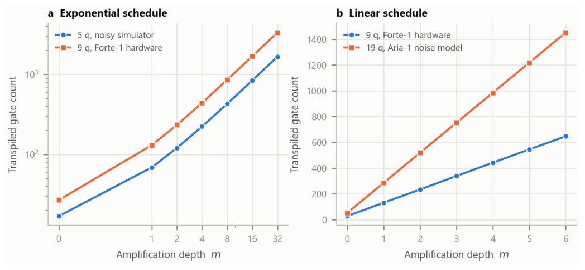
<figcaption class="paper-figure-caption"><b>Fig 1.</b> Figure 1: Transpiled circuit cost. (a) Exponential schedule, logarithmic axes. (b) Linear schedule: gate count is strictly linear in m for both register widths, with no routing overhead</figcaption>
</figure>
<figure class="paper-figure-card">
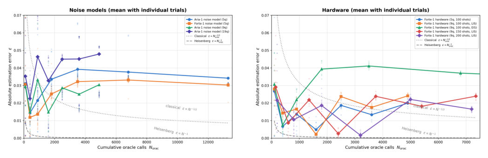
<figcaption class="paper-figure-caption"><b>Fig 2.</b> Figure 2: Estimation error as a function of cumulative oracle calls for the IonQ noise-model and hardware experiments.</figcaption>
</figure>
</div>

<p><strong>Summary.</strong> This work experimentally benchmarks Maximum-Likelihood Amplitude Estimation (MLAE) for Monte Carlo integration on trapped-ion quantum computers. The study finds that while the algorithm theoretically achieves superior scaling, current hardware noise causes the error to saturate at a measurable floor, negating the expected quantum advantage. The practical takeaway is that shallow, carefully tuned circuits are necessary, rather than maximizing circuit depth.</p>
<p><strong>Why it may be interesting.</strong> It provides a crucial, empirical assessment of the gap between theoretical quantum speedups (like Heisenberg scaling) and the actual performance achievable on near-term quantum hardware platforms like trapped ions.</p>
<details>
<summary>Detailed structure</summary>
<p><strong>Main problem.</strong> The paper assesses the practical advantage of Quantum Amplitude Estimation (QAE) over classical Monte Carlo integration for uncertainty quantification on current quantum hardware.</p>
<p><strong>Main result.</strong> While the algorithm shows near-Heisenberg scaling in the noiseless limit, on current trapped-ion hardware, the error saturates at a noise floor, and the super-classical scaling advantage does not survive.</p>
<p><strong>Method.</strong> A Maximum-Likelihood Amplitude Estimation (MLAE) pipeline, combining controlled-Ry state preparation, Grover amplification, and maximum-likelihood inference, was benchmarked.</p>
<p><strong>Model / system.</strong> The experiments were conducted on IonQ trapped-ion processors (Forte-1 and Aria-1 noise models), using a benchmark integral estimation problem.</p>
<p><strong>Key observables.</strong> Estimation error ($\epsilon$), error scaling exponent ($\alpha$), total oracle calls, and device time.</p>
<p><strong>Important parameters / regimes.</strong> Amplification depth ($m$), number of qubits (5, 9, 19), and the comparison between hardware performance and vendor noise models.</p>
<p><strong>Assumptions / limitations.</strong> The analysis distinguishes between the asymptotic theoretical correctness of MLAE and its practical performance on current noisy hardware.</p>
<p><strong>Figures summary.</strong> Figures likely show the estimation error versus the number of oracle calls, illustrating the saturation at a noise floor, and potentially comparing circuit costs across different depths.</p>
<p><strong>Paper structure.</strong> The paper systematically benchmarks the MLAE pipeline across multiple hardware settings and schedules, first establishing the noiseless limit, and then analyzing the performance degradation and saturation on real quantum hardware.</p>
</details>
<details>
<summary>Abstract</summary>
<p>Quantum Amplitude Estimation promises to accelerate Monte Carlo integration by replacing the classical $\varepsilon \propto N^{-1/2}$ sampling law with the Heisenberg-limited $\varepsilon \propto N^{-1}$ scaling, but whether any part of that advantage survives on present-day hardware is an empirical question. We report a systematic experimental benchmark of a Maximum-Likelihood Amplitude Estimation QMC pipeline on IonQ trapped-ion processors, comprising 60 hardware trials on IonQ Forte-1 across five settings(5 &amp; 9 qubits, 100-200 shots per depth, linear &amp; exponential amplification schedules, ~113 device-hours), together with 100 trials on IonQ Aria-1 &amp; Forte-1 noise models at 5, 9 &amp; 19 qubits. The pipeline combines controlled-$R_y$ rotational state preparation, Grover-based amplitude amplification and maximum-likelihood inference and is benchmarked against $b_{\max}^{-1}\!\int_0^{b_{\max}}\!\sin^2\!x\,\mathrm{d}x$ with $b_{\max}=π/5$ ,given results emerge. First, the noiseless limit it attains $\varepsilon \propto N^{-0.88}$, close to the Heisenberg-scaling reference, reducing the error 54-74x over a 133x increase in oracle calls. Second, scaling does not survive on hardware. Every noisy backend saturates at an error floor of (2-5)x 10^{-2}, with fitted exponents of 0.04-0.15 on Forte-1 linear schedules and $α\le\!0$ on the vendor noise models: beyond the optimal shallow depth, however, deeper amplification provides no sustained accuracy gain and instead returns to the noise floor. Forte-1 hardware also outperformed IonQ's own Aria-1 noise model at every depth $m \ge 2$, indicating that vendor noise models are bad predictors of MLAE accuracy. The practical implication for UQ is that on current devices the useful operating point is a shallow, schedule-tuned amplification depth chosen so that the deepest circuit lands near p~1/2 not the deepest schedule the coherence budget allows.</p>
</details>
<p><sub><a href="#top">↑ back to top</a></sub></p>

<p><a id="paper-2609.25210"></a></p>
<h3 id="kitaev-spin-liquid-in-superconducting-networks"><a href="http://arxiv.org/abs/2609.25210v1">Kitaev spin liquid in superconducting networks</a></h3>
<p><strong>Authors:</strong> Guilherme Delfino, Mehmet Dede, Dmitry Green, Michael J. Manfra, Charles M. Marcus, Claudio Chamon<br>
<strong>Type:</strong> theory · <strong>Category:</strong> strongly correlated electrons · <strong>PDF:</strong> <a href="https://arxiv.org/pdf/2609.25210v1">https://arxiv.org/pdf/2609.25210v1</a><br>
<strong>Analysis basis:</strong> full PDF text, analyzed in chunks
<strong>Topic relevance:</strong> 🔥 <code>analog quantum simulation</code> <strong>4/5</strong></p>
<div class="figure-strip-hint">↔ Scroll figures horizontally</div>
<div class="paper-figures-scroll">
<figure class="paper-figure-card">
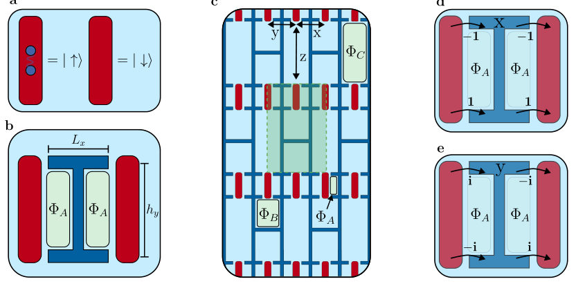
<figcaption class="paper-figure-caption"><b>Fig 1.</b> FIG. 1. a Cooper-pair boxes (red) realize effective spin-1/2 degrees of freedom, with spin up (down) corresponding to the doubly occupied (empty) state. b I-gadget (blue) formed by a proximitized semiconductor element with horizontal length 𝐿𝑥and vertical leg separation ℎ𝑦, connecting two Cooper-pair boxes. Each side of the I-gadget encloses a magnetic flux Φ𝐴. c Brick-wall-like network of Cooper-pair boxes coupled through interconnected I-gadgets, with bonds labeled x, y, and z. The green rectangle marks a unit cell consisting of one half-brick and two quarter-bricks. Each quarter-brick encloses a flux Φ𝐵, while the half-brick encloses Φ𝐶= 2Φ𝐵. d Real and e imaginary Peierls phases of the...</figcaption>
</figure>
<figure class="paper-figure-card">
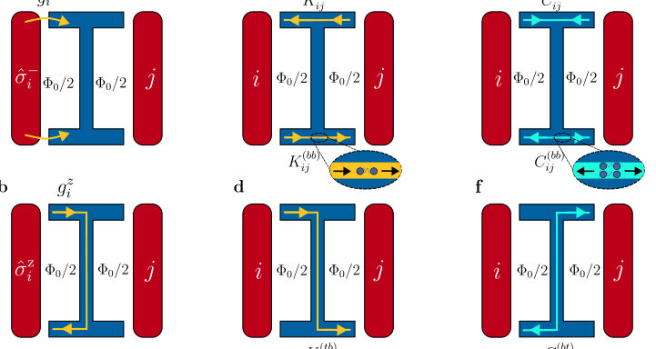
<figcaption class="paper-figure-caption"><b>Fig 2.</b> FIG. 2. Virtual processes in a superconducting I-gadget connecting Cooper-pair boxes 𝑖and 𝑗in the presence of flux Φ𝐴= Φ0/2 mod Φ0. a Pair hopping amplitudes associated with the top and bottom legs interfere destructively, yielding 𝑔𝑖= 0. b Closed virtual process in which a Cooper pair leaves and returns to the same box, generating a local longitudinal field 𝑔𝑧 𝑖ˆ𝜎z 𝑖. c Same-leg ECT2 processes (yellow): Cooper-pair transfer from 𝑖to 𝑗along the bottom leg, 𝐾(𝑏𝑏) 𝑖𝑗 , and the reverse process along the top leg, 𝐾(𝑡𝑡)★ 𝑖𝑗 . d Cross-leg ECT2 process 𝐾(𝑡𝑏) 𝑖𝑗 . e Same-leg</figcaption>
</figure>
<figure class="paper-figure-card">
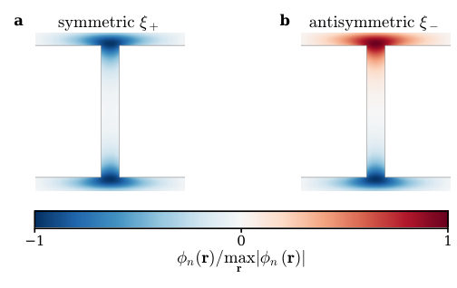
<figcaption class="paper-figure-caption"><b>Fig 3.</b> FIG. 3. Signed amplitudes of the lowest normal-state mirror- symmetry doublet 𝜉± ≃0 of the I-gadget. a Symmetric mode with normal-state energy 𝜉+ and b Antisymmetric mode with normal-state energy 𝜉−. The relative sign between the top and bottom legs dis- tinguishes the two sectors. The energy splitting between these two states is exponentially small in the I-gadget height.</figcaption>
</figure>
<figure class="paper-figure-card">
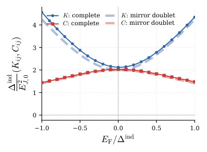
<figcaption class="paper-figure-caption"><b>Fig 4.</b> FIG. 4. Normalized exchange and anomalous pair-transfer amplitudes near the band edge. The dimensionless coefficients Δind𝐾𝑖𝑗/𝐸2 𝐽,0 (blue circles) and Δind𝐶𝑖𝑗/𝐸2 𝐽,0 (red squares) are shown as functions of 𝐸F/Δind. Solid curves include all normal-state modes up to a cutoff, while the broad dashed curves show the analytical mirror- doublet approximation.</figcaption>
</figure>
<figure class="paper-figure-card">
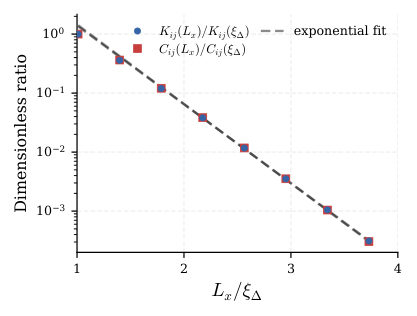
<figcaption class="paper-figure-caption"><b>Fig 5.</b> FIG. 5. Band-edge length dependence of the I-gadget. The di- mensionless, contact-normalized responses 𝐾𝑖𝑗(𝐿𝑥)/𝐾𝑖𝑗(𝜉Δ) and 𝐶𝑖𝑗(𝐿𝑥)/𝐶𝑖𝑗(𝜉Δ) are shown as functions of 𝐿𝑥/𝜉Δ. Every normal mode is included at each length, as lowest-mode approximation no longer holds.</figcaption>
</figure>
</div>

<p><strong>Summary.</strong> This paper proposes realizing the Kitaev spin liquid model in a superconducting metamaterial composed of Cooper-pair boxes. By carefully controlling external parameters like magnetic flux and Fermi energy, the authors engineer bond-directional interactions necessary for the model. This establishes a concrete, circuit-based platform for studying exotic quantum spin liquid physics.</p>
<p><strong>Why it may be interesting.</strong> This work directly bridges the gap between abstract theoretical models of quantum magnetism (Kitaev model) and tangible solid-state superconducting circuit implementations, which is highly relevant for experimental quantum simulation.</p>
<details>
<summary>Detailed structure</summary>
<p><strong>Main problem.</strong> The primary goal is to establish a viable experimental route to realize the Kitaev spin liquid model, an archetypal quantum spin liquid, within controllable superconducting metamaterials.</p>
<p><strong>Main result.</strong> The authors demonstrate that the Kitaev Hamiltonian can be realized using only bosonic Cooper-pair degrees of freedom in engineered superconducting networks, supporting both gapless and gapped spin-liquid phases.</p>
<p><strong>Method.</strong> The effective Hamiltonian is derived using perturbation theory (Schrieffer–Wolff transformation) by integrating out the superconducting elements connecting Cooper-pair boxes.</p>
<p><strong>Model / system.</strong> The system is a superconducting metamaterial built from Cooper-pair boxes (CPBs) coupled via depleted semiconductor–superconductor heterostructures forming a honeycomb lattice. The effective spins are encoded in the CPBs.</p>
<p><strong>Key observables.</strong> Gapless spin-liquid phase, gapped non-Abelian phase (with chiral Majorana edge modes), and the required bond-directional exchange interactions ($J_x, J_y, J_z$).</p>
<p><strong>Important parameters / regimes.</strong> Out-of-plane magnetic flux ($\Phi_A$) and the semiconductor Fermi energy ($E_F$), which control interference and enforce bond directionality via emergent Nambu-exchange symmetry.</p>
<p><strong>Assumptions / limitations.</strong> The derivation assumes the CPBs operate in a regime where pairing energy exceeds Coulomb energy, and the bond-directional interactions rely on the equality of $ ext{ECT}_2$ and $   ext{CAR}_2$ contributions in the low-density limit.</p>
<p><strong>Figures summary.</strong> Figure 1 illustrates the physical architecture, showing CPBs and the honeycomb network with labels for x, y, and z bonds, and depicting Peierls phases. Figure 2 details the four classes of processes contributing to the effective theory.</p>
<p><strong>Paper structure.</strong> The paper first establishes the physical architecture and the target Hamiltonian. It then derives the effective link Hamiltonians using perturbation theory, showing how bond-directional interactions emerge from the balance between cotunneling ($  ext{ECT}_2$) and anomalous pair transfer ($   ext{CAR}_2$). Finally, it discusses the resulting quantum phases and experimental feasibility.</p>
</details>
<details>
<summary>Abstract</summary>
<p>We propose a realization of the Kitaev honeycomb Hamiltonian -- an archetypal spin-liquid model -- in a superconducting metamaterial. The architecture consists of Cooper-pair boxes coupled through depleted semiconductor--superconductor heterostructures that do not require spin--orbit coupling. The Cooper-pair boxes encode effective spin degrees of freedom, while normal and anomalous virtual propagation through the heterostructures mediate bond-directional interactions. Two key control parameters are an out-of-plane magnetic flux and the semiconductor Fermi energy. The former controls interference and distinguishes the bond directions, while tuning the latter close to the bottom of the band gives rise to an emergent Nambu-exchange symmetry that enforces the required bond directionality. Through numerical calculations, we identify an operating regime with controlled corrections, with associated energy and length scales within experimental reach. These results establish a route toward equilibrium quantum spin liquids in engineered superconducting networks.</p>
</details>
<p><sub><a href="#top">↑ back to top</a></sub></p>

<p><a id="paper-2609.25336"></a></p>
<h3 id="thermalization-and-dephasing-in-an-isolated-system-of-coupled-qubits"><a href="http://arxiv.org/abs/2609.25336v1">Thermalization and dephasing in an isolated system of coupled qubits</a></h3>
<p><strong>Authors:</strong> Jukka P. Pekola, Bayan Karimi<br>
<strong>Type:</strong> theory · <strong>Category:</strong> statistical mechanics · <strong>PDF:</strong> <a href="https://arxiv.org/pdf/2609.25336v1">https://arxiv.org/pdf/2609.25336v1</a><br>
<strong>Analysis basis:</strong> full PDF text, analyzed in chunks
<strong>Topic relevance:</strong> <code>methods for driven-dissipative</code> <strong>3/5</strong> · <code>scars &amp; prethermalization</code> <strong>3/5</strong> · <code>Keldysh / 2PI / non-Gaussian methods</code> <strong>2/5</strong> · <code>analog quantum simulation</code> <strong>2/5</strong> · <code>driven-dissipative phase transition</code> <strong>2/5</strong> · <code>non-equilibrium universality</code> <strong>2/5</strong> · <code>correlated / nonlocal dissipation</code> <strong>1/5</strong> · <code>quantum measurements</code> <strong>1/5</strong></p>
<div class="figure-strip-hint">↔ Scroll figures horizontally</div>
<div class="paper-figures-scroll">
<figure class="paper-figure-card">
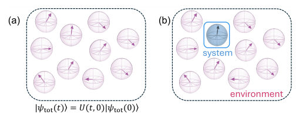
<figcaption class="paper-figure-caption"><b>Fig 1.</b> FIG. 1. An isolated ensemble of coupled qubits. (a) Globally the ensemble evolves unitarily. (b) Here we study the “sys- tem” formed in this case of a single qubit, with the rest of the isolated ensemble forming the bath.</figcaption>
</figure>
<figure class="paper-figure-card">
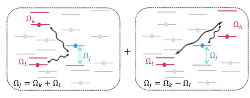
<figcaption class="paper-figure-caption"><b>Fig 2.</b> FIG. 2. Three-wave mixing in all-to-all coupled qubits. Un- like one-to-one coupling, three-wave mixing allows interaction and energy exchange between non-degenerate qubits as well.</figcaption>
</figure>
<figure class="paper-figure-card">
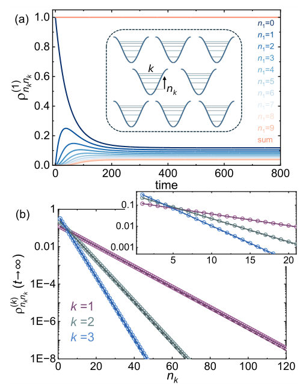
<figcaption class="paper-figure-caption"><b>Fig 3.</b> FIG. 3. Thermalization of a set of qubits under three-wave mixing in form of weakly anharmonic oscillators (WAOs). (a) Time traces of the lowest energy WAO (sketched in the inset) on different energy levels n1 = 0, 1, ..., 9 calculated numeri- cally. Time t is given in units 1/∆Ω, and the parameters are N = 100, nmax k = 150 (truncation of the number of levels included for each WAO), |Mijk|2 = 0.001 for all i, j, k, and the initial state is ρ(10) 10,10(0) = 1 with all the other WAOs in their ground state. (b) The asymptotic t →∞populations on the level nk of the WAOs k = 1, 2, 3 with parameters as in (a). The numerical results are shown by symbols, whereas the thermal populations of Eq. (6)...</figcaption>
</figure>
<figure class="paper-figure-card">
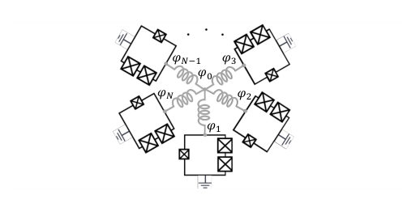
<figcaption class="paper-figure-caption"><b>Fig 4.</b> FIG. 5. A possible experimental realization: weakly anhar- monic oscillators in form of asymmetric Josephson junction loops are connected all-to-all via inductors.</figcaption>
</figure>
<figure class="paper-figure-card">
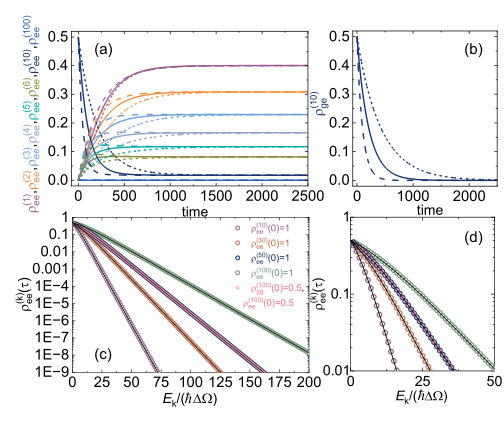
<figcaption class="paper-figure-caption"><b>Fig 5.</b> FIG. 4. Dynamics and thermalization of N qubits in form of ideal two-level systems under three-wave mixing after ini- tial excitation of a selected qubit with other qubits in the ground state, and with different coupling modalities. (a) The time traces of populations of a few selected qubits presented with different coupling forms: solid curves correspond to |Mpqr|2 = 0.001 for all combinations of p, q, r, dashed curves to |Mpqr|2 = 0.0002p exp(−|q −r|/N), and short-dashed curves (for demonstrating the robustness of thermalization) to a more unrealistic form |Mpqr|2 = (0.005/p) exp(|q−r|/N), with initial superposition state ρ(10) gg (0) = ρ(10) ee (0) = 0.5 and N = 100. (b) Dynamics of the...</figcaption>
</figure>
</div>

<p><strong>Summary.</strong> This paper theoretically analyzes how isolated, coupled quantum systems, such as qubits, can exhibit thermalization and dephasing despite evolving unitarily. By deriving and solving a weak-coupling master equation, the authors show that non-linear coupling terms are necessary to drive the system towards a thermal state, while linear coupling alone is insufficient. The findings have implications for understanding energy relaxation in quantum circuits.</p>
<p><strong>Why it may be interesting.</strong> This work directly addresses non-equilibrium dynamics in isolated quantum systems, providing crucial insights into how thermalization can occur purely through internal interactions without coupling to an external bath, which is vital for understanding quantum thermalization.</p>
<details>
<summary>Detailed structure</summary>
<p><strong>Main problem.</strong> The paper investigates the phenomenon of thermalization and dephasing within an isolated quantum system, contrasting this behavior with the standard definition of unitary evolution.</p>
<p><strong>Main result.</strong> The system's ability to thermalize depends critically on the coupling mechanism: linear coupling fails to achieve thermal equilibrium, whereas non-linearity (three-wave mixing) ensures a thermal distribution determined by the initial total energy.</p>
<p><strong>Method.</strong> The analysis employs a weak-coupling master equation approach, deriving time evolution equations for the density matrix elements of a subsystem coupled to the rest of the system.</p>
<p><strong>Model / system.</strong> The model consists of an isolated set of $N$ coupled qubits (or weakly anharmonic oscillators). The dynamics are analyzed by treating one qubit as the system and the remaining qubits as an effective bath, considering both linear and cubic (three-wave mixing) coupling terms.</p>
<p><strong>Key observables.</strong> Populations ($
ho_{gg}, 
ho_{ee}$), coherence ($
ho_{ge}$), and the final steady-state temperature ($eta$).</p>
<p><strong>Important parameters / regimes.</strong> Weak coupling limit, initial total energy ($\Delta E$), and the presence/absence of non-linearity.</p>
<p><strong>Assumptions / limitations.</strong> The analysis relies on deriving a weak-coupling master equation and making approximations regarding the coupling strength and the nature of the bath interaction.</p>
<p><strong>Figures summary.</strong> Figures illustrate the setup comparing global unitary evolution to subsystem analysis, show time traces of populations for WAOs under three-wave mixing, and display the decay of off-diagonal elements.</p>
<p><strong>Paper structure.</strong> The paper progresses by first establishing the theoretical framework using a weak-coupling master equation for a subsystem. It then analyzes the results for linear coupling (showing no thermalization) and contrasts this with the non-linear case (showing thermalization). Finally, it presents potential experimental realizations.</p>
</details>
<details>
<summary>Abstract</summary>
<p>A system evolving unitarily does not dephase or thermalize by definition. Yet, if one considers a part of a unitary system, situation is different. Here we analyze an isolated set of coupled qubits taking one qubit at a time as a subsystem, and writing self-consistently a weak-coupling master equation for it. Weakly anharmonic oscillators and ideal qubits (two-level systems) demonstrate dephasing, i.e. the diagonal elements of the density matrix reach a steady-state in the long-time limit, and the off-diagonal elements of ideal qubits decay exponentially. For the linear coupling between the qubits, only the degenerate ones interact, and the system does not reach thermal distribution. However, non-linearity, in our analysis in form of three-wave mixing, ensures a thermal distribution in the long time limit, where the temperature is determined uniquely by the energy in the initial non-thermal state. Finally, we present a potential experimental scheme based on a superconducting quantum circuit.</p>
</details>
<p><sub><a href="#top">↑ back to top</a></sub></p>

<p><a id="paper-2609.25252"></a></p>
<h3 id="approach-to-steady-state-in-nested-resetting-processes"><a href="http://arxiv.org/abs/2609.25252v1">Approach to Steady-State in Nested Resetting Processes</a></h3>
<p><strong>Authors:</strong> Callum Britton, Ben Le Jeune, Henry Alston, Paul C. Bressloff, Thibault Bertrand<br>
<strong>Type:</strong> theory · <strong>Category:</strong> statistical mechanics · <strong>PDF:</strong> <a href="https://arxiv.org/pdf/2609.25252v1">https://arxiv.org/pdf/2609.25252v1</a><br>
<strong>Analysis basis:</strong> full PDF text, analyzed in chunks
<strong>Topic relevance:</strong> <code>methods for driven-dissipative</code> <strong>3/5</strong> · <code>non-equilibrium universality</code> <strong>3/5</strong> · <code>Keldysh / 2PI / non-Gaussian methods</code> <strong>2/5</strong> · <code>analog quantum simulation</code> <strong>2/5</strong> · <code>driven-dissipative phase transition</code> <strong>2/5</strong> · <code>correlated / nonlocal dissipation</code> <strong>1/5</strong> · <code>quantum measurements</code> <strong>1/5</strong> · <code>scars &amp; prethermalization</code> <strong>1/5</strong></p>
<div class="figure-strip-hint">↔ Scroll figures horizontally</div>
<div class="paper-figures-scroll">
<figure class="paper-figure-card">
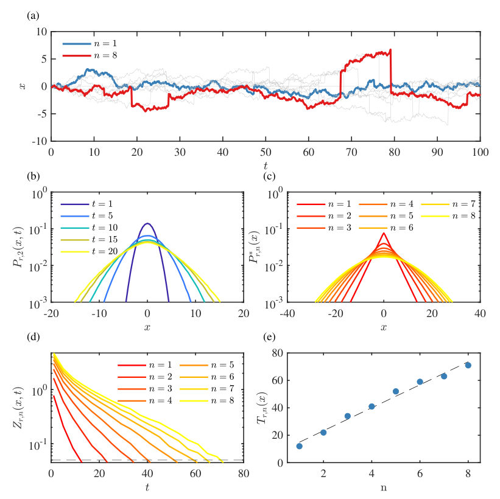
<figcaption class="paper-figure-caption"><b>Fig 1.</b> Figure 1: Approach to steady state schematic. (a) Example trajectories for a nested resetting chain of length 8 with particles 1 and 8 highlighted in red and blue respectively; (b) Time-dependent distribution of particle n = 2 plotted at a range of times, showing a widening of the distribution as the particle relaxes to steady state; (c) Steady-state distributions of particles 1 to 8 (r = D = 1); (d) Relative deviation from steady state Zr,n(x, t), equation 2.4, plotted for a range of n as a function of t, x ≈α−1; (e) Accumulation time of particle n, Tr,n(x), equation 2.3, displaying a linear increase in the time taken for the system to reach steady state, x ≈α−1. All simulations performed...</figcaption>
</figure>
<figure class="paper-figure-card">
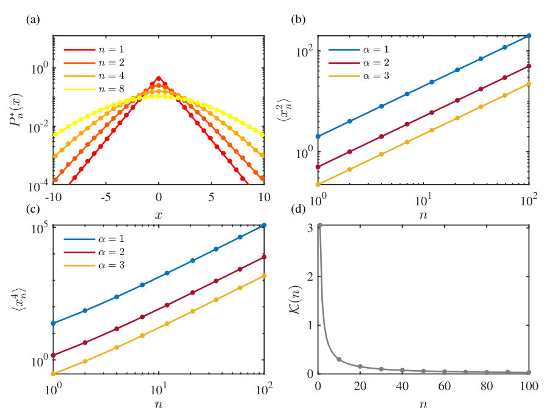
<figcaption class="paper-figure-caption"><b>Fig 2.</b> Figure 2: Steady-state properties of nested resetting. (a) Steady-state distributions P ∗ n(x) for nested resetters with equal resetting rates, equation (2.20), for n ∈{1, 2, 4, 8}, resetting rate r = 1, and diffusivity D = 1. (b) Steady-state spatial variance ⟨x2 n⟩ of nested resetters with equal resetting rates, equation (2.22), for α ∈{1, 2, 3}. (c) Steady-state fourth spatial moment ⟨x4 n⟩of nested resetters with equal resetting rates, equation (2.22), for α ∈{1, 2, 3}. (d) Excess kurtosis K(n) of nested resetters with equal resetting rates, equation (2.25). Solid lines indicate analytical results and symbols indicate numerical simulations.</figcaption>
</figure>
<figure class="paper-figure-card">
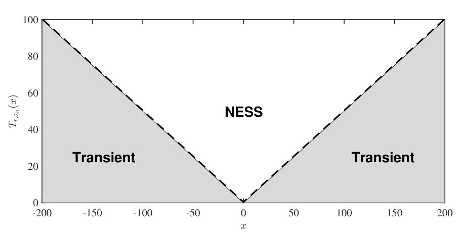
<figcaption class="paper-figure-caption"><b>Fig 3.</b> Figure 3: Single particle accumulation time. The accumulation time of a single stochastic resetter Tr,a1(x), equation (3.10), for r = 1 and D = 1. The curve separates space into a NESS region, where the particle has reached its non-equilibrium steady state, and a transient region, where the particle is yet to reach steady state.</figcaption>
</figure>
<figure class="paper-figure-card">
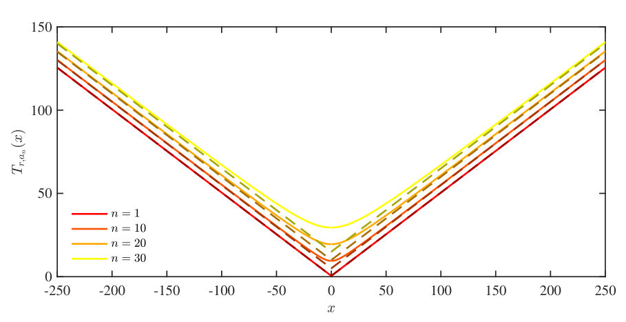
<figcaption class="paper-figure-caption"><b>Fig 4.</b> Figure 4: Accumulation time of nested resetters with equal rates. The accumulation time Tr,an(x) of particle n in a nested resetting chain with equal rates, equation (3.16), and the corresponding large |x| approximation, equation (3.24), plotted for a range of n with r = 1 and D = 1. Solid lines indicate the exact results; dashed lines indicate the large |x| approximation.</figcaption>
</figure>
<figure class="paper-figure-card">
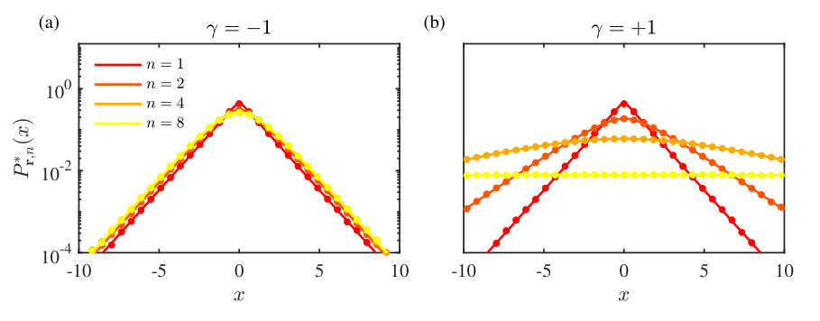
<figcaption class="paper-figure-caption"><b>Fig 5.</b> Figure 5: Steady-state distributions P ∗ r,n(x) of nested resetters with geometric rates. Steady-state distributions of nested resetters with (a) geometrically increasing resetting rates (ri = ei−1) and (b) geometrically decreasing resetting rates (ri = e1−i), equation (4.5), both with diffusivity D = 1 for n ∈{1, 2, 4, 8}. Solid lines indicate analytical results and symbols indicate numerical simulations.</figcaption>
</figure>
</div>

<p><strong>Summary.</strong> This paper provides a comprehensive analytical description of how systems approach a non-equilibrium steady state in nested stochastic resetting processes. It derives key diagnostics like accumulation times and shows that relaxation is bottlenecked by the slowest resetting component. These results have potential applications in modeling relaxation and transport in biological systems.</p>
<p><strong>Why it may be interesting.</strong> The study of non-equilibrium steady states and relaxation dynamics in complex, coupled stochastic systems is highly relevant to open quantum systems and quantum transport models.</p>
<details>
<summary>Detailed structure</summary>
<p><strong>Main problem.</strong> The paper characterizes the approach to a non-equilibrium steady state (NESS) in nested stochastic resetting processes.</p>
<p><strong>Main result.</strong> Relaxation dynamics are shown to be governed by the minimum resetting rate in the system, and the accumulation time for steady state establishment grows linearly along the resetting chain.</p>
<p><strong>Method.</strong> The authors derive analytical solutions using renewal equation approaches, Fokker-Planck equations, and Laplace transforms to analyze the time evolution.</p>
<p><strong>Model / system.</strong> The model involves $N$ Brownian particles on $\mathbb{R}$ undergoing nested stochastic resetting, where each particle resets to the position of the preceding one. The analysis is extended to include heterogeneous resetting rates.</p>
<p><strong>Key observables.</strong> Accumulation time ($T_{r,n}(x)$), steady-state probability distributions ($P_{r,n}(x)$), and spatial moments (e.g., variance, excess kurtosis).</p>
<p><strong>Important parameters / regimes.</strong> Resetting rates ($r$), diffusion coefficient ($D$), and the number of particles ($N$).</p>
<p><strong>Assumptions / limitations.</strong> The analysis is restricted to one spatial dimension ($d=1$) and assumes Poissonian resetting protocols.</p>
<p><strong>Figures summary.</strong> Figures illustrate the schematic approach to steady state, notably showing the linear increase of the accumulation time along the resetting chain.</p>
<p><strong>Paper structure.</strong> The paper builds from single-particle resetting analysis to the nested extension, deriving time-dependent PDFs and characterizing the relaxation dynamics for both equal and heterogeneous resetting rates.</p>
</details>
<details>
<summary>Abstract</summary>
<p>We characterise the approach to nonequilibrium steady state in nested resetting processes by deriving accumulation times for the system, which quantify the effective first-passage time for the local establishment of steady state. For equal resetting rates, we obtain closed-form expressions showing that relaxation propagates as a wavefront with a delay that increases linearly along the resetting chain. We then extend this analysis to heterogeneous resetting rates, deriving exact steady-state distributions, spatial moments and accumulation times for both degenerate and non-degenerate resetting rates. We show that relaxation to steady state is ultimately governed by the minimum resetting rate in the system and, in degenerate systems, its multiplicity. These results provide a comprehensive analytical description of first-passage to nonequilibrium steady state in hierarchically coupled stochastic resetting systems, with potential applications to relaxation and transport processes in biological systems.</p>
</details>
<p><sub><a href="#top">↑ back to top</a></sub></p>

<p><a id="paper-2609.25934"></a></p>
<h3 id="thermodynamic-efficiency-of-communication-channels"><a href="http://arxiv.org/abs/2609.25934v1">Thermodynamic efficiency of communication channels</a></h3>
<p><strong>Authors:</strong> Nahuel Freitas, Pedro E. Harunari, Massimiliano Esposito<br>
<strong>Type:</strong> theory · <strong>Category:</strong> statistical mechanics · <strong>PDF:</strong> <a href="https://arxiv.org/pdf/2609.25934v1">https://arxiv.org/pdf/2609.25934v1</a><br>
<strong>Analysis basis:</strong> full PDF text, analyzed in chunks
<strong>Topic relevance:</strong> <code>driven-dissipative phase transition</code> <strong>3/5</strong> · <code>non-equilibrium universality</code> <strong>3/5</strong> · <code>Keldysh / 2PI / non-Gaussian methods</code> <strong>2/5</strong> · <code>analog quantum simulation</code> <strong>2/5</strong> · <code>correlated / nonlocal dissipation</code> <strong>2/5</strong> · <code>methods for driven-dissipative</code> <strong>2/5</strong> · <code>quantum measurements</code> <strong>1/5</strong></p>
<div class="figure-strip-hint">↔ Scroll figures horizontally</div>
<div class="paper-figures-scroll">
<figure class="paper-figure-card">
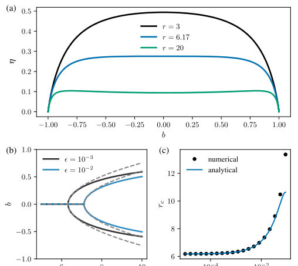
<figcaption class="paper-figure-caption"><b>Fig 1.</b> FIG. 1. Symmetry breaking in the Binary Symmetric Channel at maximum efficiency. (a) Efficiency as a function of input bias for ϵ = 10−3 and different values of r = ΣT /ΣI (ΣI/kb = 1). (b) Input bias maximizing efficiency as a function of r for different values of ϵ. (c) Critical point rc as a function of ϵ (see Eq. (12)).</figcaption>
</figure>
<figure class="paper-figure-card">
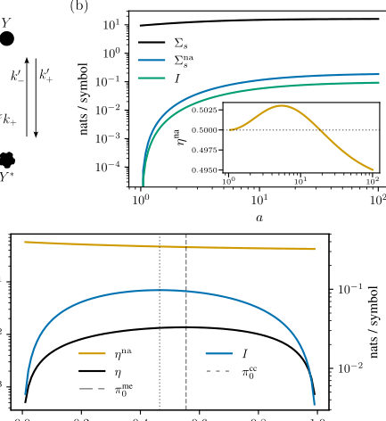
<figcaption class="paper-figure-caption"><b>Fig 2.</b> FIG. 2. Thermodynamic limits of the sensing channel. (a) Scheme of the possible transitions in the simple sensing model. (b) Mutual information I, its non-adiabatic bound Σna s , and the non-adiabatic efficiency ηna = kbI/Σna s (inset) versus the rescaling factor a at π0 = 0.3. (c) Mutual information I and efficiencies η and ηna versus input probability π0 at a = 50. The total entropy production Σs entering η = kbI/Σs is computed for a holding time τ equal to 5 times the slowest relaxation time of the output (see Appendix E). The dashed lines indicate the optimal input probabilities πme 0 and πcc 0 . In all cases we took k+ = k′ −= 1.0, k−= k′ + = 0.1 and kb = T = 1.</figcaption>
</figure>
</div>

<p><strong>Summary.</strong> This work establishes a thermodynamic efficiency measure for communication channels by bounding the entropy production cost. It shows that optimizing this efficiency favors biased inputs that minimize costly state transitions, rather than maximizing raw information capacity. This has implications for understanding energy dissipation in natural and artificial information processing systems.</p>
<p><strong>Why it may be interesting.</strong> The focus on non-equilibrium thermodynamics, entropy production bounds, and the interplay between information capacity and thermodynamic cost is highly relevant to open quantum systems and quantum thermodynamics.</p>
<details>
<summary>Detailed structure</summary>
<p><strong>Main problem.</strong> The paper derives bounds on the thermodynamic cost (entropy production) associated with communication channels and defines a thermodynamic efficiency metric.</p>
<p><strong>Main result.</strong> The thermodynamic efficiency is bounded by unity, and maximizing it favors a biased input that switches rarely, leading to spontaneous symmetry breaking in simple models.</p>
<p><strong>Method.</strong> The analysis uses information theory concepts (mutual information, capacity) combined with non-equilibrium thermodynamics, decomposing entropy production into adiabatic and non-adiabatic parts.</p>
<p><strong>Model / system.</strong> The study applies to a general class of communication channels relevant to both artificial and natural systems, exemplified by the Binary Symmetric Channel (BSC) and a minimal cellular sensing model.</p>
<p><strong>Key observables.</strong> Mutual Information ($I$), Channel Capacity ($C$), Entropy Production ($\Sigma$), and Thermodynamic Efficiency ($\eta = I/\Sigma$).</p>
<p><strong>Important parameters / regimes.</strong> Input bias parameter ($b$), channel error rate ($\epsilon$), and the ratio of transition to idle entropy production ($r$).</p>
<p><strong>Assumptions / limitations.</strong> The analysis assumes specific time-scale separations and that the cost must account for transitions between successive symbols, not just the input symbols themselves.</p>
<p><strong>Figures summary.</strong> Figures illustrate the dependence of efficiency ($\eta$) on input bias ($b$) and show the non-trivial symmetry breaking transition in the BSC case.</p>
<p><strong>Paper structure.</strong> The paper establishes the fundamental thermodynamic bound ($k_b I \le \Sigma_s$), defines efficiency, and then applies this framework to specific models like the BSC, demonstrating how optimization leads to biased, symmetry-breaking inputs.</p>
</details>
<details>
<summary>Abstract</summary>
<p>We identify a broad class of communication channels that captures common physical constraints in both artificial and natural systems and derive bounds on their thermodynamic cost. We find that the entropy production per channel use is bounded from below by the input-output mutual information, and their ratio -mutual information divided by entropy production- defines the thermodynamic efficiency. Unlike previous studies of energy-constrained communication channels, our analysis shows that thermodynamic costs must be assigned not only to the input symbols themselves, but also to transitions between successive symbols. As a result, maximizing thermodynamic efficiency favors a biased input that switches only rarely, rather than the capacity-achieving input. For the binary symmetric channel, this preference emerges through a pitchfork bifurcation that spontaneously breaks the symmetry of the channel. A minimal model of cellular sensing exhibits the same phenomenon.</p>
</details>
<p><sub><a href="#top">↑ back to top</a></sub></p>

<p><a id="paper-2609.26734"></a></p>
<h3 id="entropy-driven-initiation-and-cytoskeletal-viscoelasticity-in-endocytosis-an-onsager-variational-framework"><a href="http://arxiv.org/abs/2609.26734v1">Entropy-Driven Initiation and Cytoskeletal Viscoelasticity in Endocytosis: An Onsager Variational Framework</a></h3>
<p><strong>Authors:</strong> Jinjie Liu, Zhongcan Ouyang, Hao Wu<br>
<strong>Type:</strong> theory · <strong>Category:</strong> statistical mechanics · <strong>PDF:</strong> <a href="https://arxiv.org/pdf/2609.26734v1">https://arxiv.org/pdf/2609.26734v1</a><br>
<strong>Analysis basis:</strong> full PDF text, analyzed in chunks
<strong>Topic relevance:</strong> <code>Keldysh / 2PI / non-Gaussian methods</code> <strong>3/5</strong> · <code>methods for driven-dissipative</code> <strong>3/5</strong> · <code>driven-dissipative phase transition</code> <strong>2/5</strong> · <code>non-equilibrium universality</code> <strong>2/5</strong> · <code>Frenkel-Kontorova</code> <strong>1/5</strong> · <code>correlated / nonlocal dissipation</code> <strong>1/5</strong> · <code>quantum measurements</code> <strong>1/5</strong></p>
<div class="figure-strip-hint">↔ Scroll figures horizontally</div>
<div class="paper-figures-scroll">
<figure class="paper-figure-card">
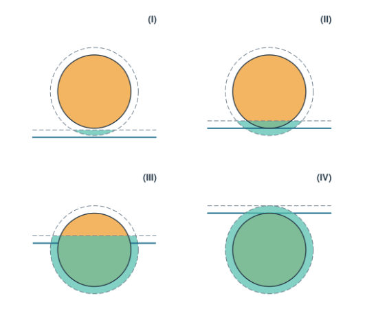
<figcaption class="paper-figure-caption"><b>Fig 1.</b> FIG. 1. Entropy-induced engulfment model. The yellow sphere represents the virus of radius R. The dashed spherical shell of thickness r around the virus is the depletion zone of the virus, i.e., the region excluded to the centers of crowding agents. The region between the dashed and solid horizontal lines represents the depletion zone of the membrane. The green area indicates the consumed (overlapped) portion of the depletion zones at the current engulfment stage; equivalently, it is the extra volume released to the external environment for the crowding agents to move freely. This overlap increases the accessible volume for crowders and generates an effective attraction.</figcaption>
</figure>
<figure class="paper-figure-card">
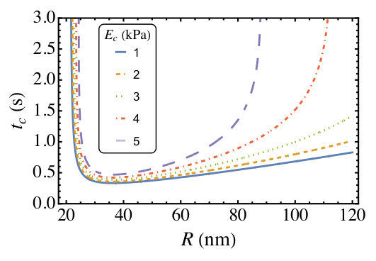
<figcaption class="paper-figure-caption"><b>Fig 2.</b> FIG. 2. Complete engulfment time tc as a function of particle radius R for different host cell Young’s moduli Ec = 1, 2, 3, 4, 5 kPa with Ev = 100 MPa. The stationary radius is independent of Ec in the reduced time expression. The finite-time domain depends on Ec and a.</figcaption>
</figure>
<figure class="paper-figure-card">
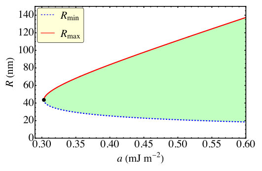
<figcaption class="paper-figure-caption"><b>Fig 3.</b> FIG. 3. Engulfment phase diagram in the plane of particle radius R and adhesion energy density a for Ec = 5 kPa and Ev = 100 MPa. The shaded region marks the complete engulfment window. The boundaries merge at a limiting parameter value. The stationary radius shifts to smaller values as a increases.</figcaption>
</figure>
</div>

<p><strong>Summary.</strong> This work develops a comprehensive theoretical model to describe the mechanics of endocytosis, integrating non-specific entropic depletion forces with specific binding and the viscoelastic resistance of the cell cortex. By using an Onsager variational approach, the authors predict how these competing forces govern the rate and feasibility of membrane wrapping. The findings highlight the crucial role of non-specific interactions in initiating cellular uptake processes.</p>
<p><strong>Why it may be interesting.</strong> While focused on biophysics, the use of the Onsager variational principle to couple dissipation (viscoelasticity) with free energy minimization (depletion/binding) provides a general framework applicable to non-equilibrium dynamics in complex soft matter systems.</p>
<details>
<summary>Detailed structure</summary>
<p><strong>Main problem.</strong> The paper investigates the physical mechanisms driving the initial approach and subsequent engulfment during receptor-mediated endocytosis, focusing on non-specific forces.</p>
<p><strong>Main result.</strong> The model predicts that entropic depletion attraction provides a possible non-specific force contributing to membrane proximity, and the wrapping time is sensitive to cell stiffness and binding energy density.</p>
<p><strong>Method.</strong> It combines depletion attraction (derived from excluded volume theory), ligand-receptor binding, membrane deformation (using Helfrich-Canham), and cytoskeletal viscoelastic dissipation (using a hereditary integral) within an Onsager variational framework.</p>
<p><strong>Model / system.</strong> The system models a spherical particle (virus) approaching and wrapping around a cell membrane, influenced by crowders (depletants) in the extracellular space and the viscoelastic properties of the underlying cytoskeleton.</p>
<p><strong>Key observables.</strong> Wrapping time, conditional minimum ligand density, finite particle-size window, and the depletion potential/force.</p>
<p><strong>Important parameters / regimes.</strong> Crowder radius ($r$), virus radius ($R$), membrane stiffness, cytoskeletal viscosity ($\eta_c$), and binding energy density.</p>
<p><strong>Assumptions / limitations.</strong> The extension of the planar depletion volume calculation to the curved wrapping phase is an approximation, and the viscoelastic response is modeled using a standard linear solid.</p>
<p><strong>Figures summary.</strong> Figure 1 illustrates the entropy-induced engulfment model, showing the virus, depletion zones, and the overlap region representing increased accessible volume for crowders.</p>
<p><strong>Paper structure.</strong> The paper first establishes the depletion potential for planar geometry, then extends this to a reduced continuum model incorporating viscoelasticity and binding energy, culminating in kinetic predictions for the wrapping time and size window.</p>
</details>
<details>
<summary>Abstract</summary>
<p>Receptor-mediated endocytosis requires a particle to approach the cell membrane to within a few nanometers before ligand--receptor binding can occur. Existing continuum models often start from an already established contact and do not explicitly describe how crowding particles on the extracellular side influence the distribution of the particle near the membrane. We examine entropic depletion forces as one possible nonspecific contribution to this initial approach. For ideal depletants, the Asakura--Oosawa excluded-volume construction gives an exact depletion potential for the planar geometry before contact. The potential and force vanish continuously at the onset of excluded-volume overlap. This interaction provides a possible contribution to membrane proximity before specific binding, while its extension to curved wrapping geometries requires additional approximation. Within a reduced continuum model, we combine depletion attraction, ligand--receptor binding, membrane deformation, and cytoskeletal viscoelastic dissipation. The viscoelastic contact is formulated through a hereditary integral and a standard linear solid. The kinetic model gives a conditional minimum ligand density for complete engulfment, a finite particle-size window, and a stiffness-dependent upper limit. When the stationary radius lies inside the domain of finite positive wrapping times, the estimated wrapping time has a minimum at a radius that decreases with increasing binding energy density. At fixed viscosity and other independent parameters, the same time approximation predicts slower wrapping as cell stiffness increases. The two positive roots defining the size window merge at a limiting parameter value, which characterizes closure of the admissible size interval. Depletion attraction is interpreted as one possible contribution to particle-membrane association</p>
</details>
<p><sub><a href="#top">↑ back to top</a></sub></p>

<p><a id="paper-2609.25708"></a></p>
<h3 id="how-do-incorrect-ligands-help-detect-a-correct-ligand"><a href="http://arxiv.org/abs/2609.25708v1">How do incorrect ligands help detect a correct ligand?</a></h3>
<p><strong>Authors:</strong> Yan-Ru Chen, Kwan-tai Leung, Hsuan-Yi Chen<br>
<strong>Type:</strong> theory · <strong>Category:</strong> statistical mechanics · <strong>PDF:</strong> <a href="https://arxiv.org/pdf/2609.25708v1">https://arxiv.org/pdf/2609.25708v1</a><br>
<strong>Analysis basis:</strong> full PDF text, analyzed in chunks
<strong>Topic relevance:</strong> <code>driven-dissipative phase transition</code> <strong>3/5</strong> · <code>methods for driven-dissipative</code> <strong>3/5</strong> · <code>non-equilibrium universality</code> <strong>3/5</strong> · <code>Keldysh / 2PI / non-Gaussian methods</code> <strong>1/5</strong> · <code>analog quantum simulation</code> <strong>1/5</strong> · <code>correlated / nonlocal dissipation</code> <strong>1/5</strong> · <code>quantum measurements</code> <strong>1/5</strong></p>
<div class="figure-strip-hint">↔ Scroll figures horizontally</div>
<div class="paper-figures-scroll">
<figure class="paper-figure-card">
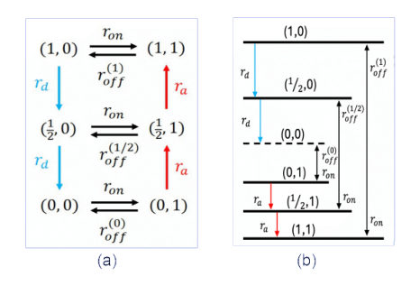
<figcaption class="paper-figure-caption"><b>Fig 1.</b> FIG. 1. (a) The states (ai, bi) of a receptor with k = 2. The bound states are shown on the right, the free states on the left. The binding rate is ron, the activation rate is ra, and the deactivation rate is rd. For simplicity, ron, ra, and rd are constants. The unbinding rate r(a) off , where a = 0, 1/2, 1, how- ever, may depend on the activation level. (b) The states of an isolated receptor arranged according to its energy. Activation of free receptors is forbidden; a bound-state receptor lowers its energy when it is activated.</figcaption>
</figure>
<figure class="paper-figure-card">
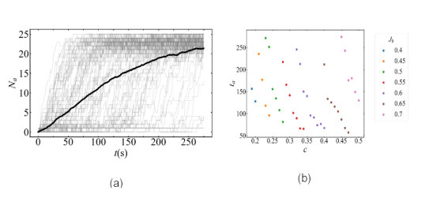
<figcaption class="paper-figure-caption"><b>Fig 2.</b> FIG. 3. (a) The number of fully activated receptors Na as a function of time t in the presence of 1 correct ligand from 100 simulation runs for Jb = 0.55, c = 0.32. The light grey lines are Na(t) from individual simulation runs; the black solid curve is the average over 100 runs. (b) ta versus c at various Jb.</figcaption>
</figure>
<figure class="paper-figure-card">
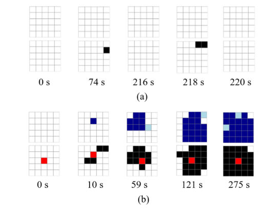
<figcaption class="paper-figure-caption"><b>Fig 3.</b> FIG. 2. Evolution of the activation state (white: a = 0, light blue: a = 1/2, dark blue: a = 1) and binding state (white: b = 0, black: b = 1, red: b = −1) for a system without (a) and with (b) a correct ligand for concentration of incorrect ligand c = 0.32 and binding-state coupling constant Jb = 0.55. Notice that during the simulation, the correct ligand binds to different receptors at different instances, indicating multiple unbind-diffusion-rebind events.</figcaption>
</figure>
<figure class="paper-figure-card">
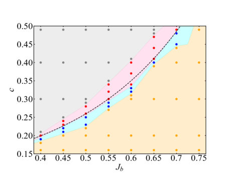
<figcaption class="paper-figure-caption"><b>Fig 4.</b> FIG. 4. Phase diagram of our detector system. The gray region is where kinetic proofreading fails. In the light brown region, the correct ligand cannot reach Na &gt; 10 before 275 s. The light green region is where 275 s &gt; ta &gt; 150 s, and the light red region is where ta &lt; 150 s. Data are collected at the locations marked by symbols. The dashed curve is the fitted function c(Jb) = (0.0721 + 0.0248e4Jb)t0/ta with ta = 150 s.</figcaption>
</figure>
<figure class="paper-figure-card">
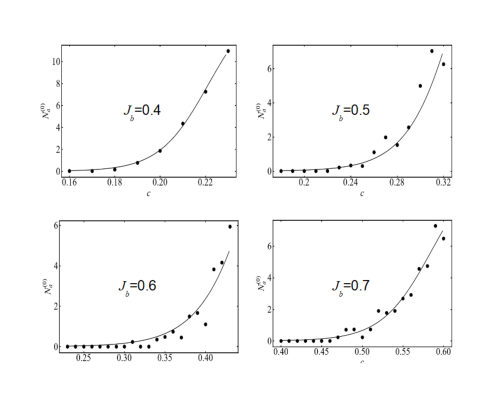
<figcaption class="paper-figure-caption"><b>Fig 5.</b> FIG. 5. N (0) A at different c for given Jb. At sufficiently large c, N (0) A becomes large, indicating failure of kinetic proofreading at large concentrations of incorrect ligands.</figcaption>
</figure>
</div>

<p><strong>Summary.</strong> This work proposes a minimal model for T cell receptor activation to explain how a system achieves high specificity using only a few correct ligands. It shows that the coupling between neighboring receptors allows a single correct ligand to trigger a large, rapid signal, while incorrect ligands alone fail to do so. The analysis uses kinetic modeling and phase diagrams to map out the optimal parameter regimes for signal detection.</p>
<p><strong>Why it may be interesting.</strong> The use of coupled, non-equilibrium dynamics and the mapping to an Ising-like model to describe biological signaling pathways is relevant to understanding collective behavior in open quantum systems or complex many-body dynamics.</p>
<details>
<summary>Detailed structure</summary>
<p><strong>Main problem.</strong> The paper investigates the mechanism by which incorrect ligands can assist in the specific detection of a correct ligand, mimicking T cell receptor (TCR) activation.</p>
<p><strong>Main result.</strong> The system exhibits high specificity because incorrect ligands alone cannot activate the receptors, but the binding of a single correct ligand can trigger a rapid, amplified signal through coupling effects.</p>
<p><strong>Method.</strong> The authors developed and analyzed a minimal kinetic model simulating receptor binding and activation on a lattice, mapping the dynamics to an Ising-like Hamiltonian.</p>
<p><strong>Model / system.</strong> The model consists of a small cluster of immobile receptors interacting with two types of ligands (correct/incorrect) and governed by enzyme-mediated activation/deactivation rates. The interactions include nearest-neighbor coupling ($J_b$) and reversible binding.</p>
<p><strong>Key observables.</strong> Detector output (number of fully activated receptors), signal amplification, and the activation time ($t_a$).</p>
<p><strong>Important parameters / regimes.</strong> Binding-state coupling strength ($J_b$), incorrect ligand concentration ($c$), and kinetic rates ($r_a, r_d$).</p>
<p><strong>Assumptions / limitations.</strong> The model is a simplification of TCRs; the coupling term for boundary receptors is set to zero; the derivation of the cluster formation time neglects merging processes.</p>
<p><strong>Figures summary.</strong> Figures illustrate the evolution of activation states with and without a correct ligand, and phase diagrams map out parameter regimes satisfying criteria for high specificity, sensitivity, and rapid response.</p>
<p><strong>Paper structure.</strong> The paper introduces the minimal model, details the kinetic and energetic framework (Hamiltonian), analyzes the performance criteria (specificity, sensitivity, speed), and presents results showing the role of the correct ligand as a nucleation seed.</p>
</details>
<details>
<summary>Abstract</summary>
<p>Intrigued by the response of T cell receptors to the presence of a few agonist ligands, we propose a minimal model that can achieve similar performance. The model consists of a small cluster of immobile receptors that bind reversibly to two types (correct/incorrect) of ligands in the environment, with slightly weaker binding strength for the incorrect one. It features binding-state coupling between nearest-neighbor receptors, and receptors in the bound/free states are activated/deactivated by specific enzymes, with rates that allow kinetic proofreading. It is found that, for a range of binding-state coupling strength, incorrect ligands alone cannot activate the receptors, but the binding of merely one correct ligand to a receptor is sufficient to promote the activation of other receptors via induced binding to incorrect ligands. Both response time and signal amplification increase as the receptor binding-state coupling strength increases until it reaches an optimal range to achieve the most rapid and sensitive response. These results suggest a possible mechanism for a speedy and specific response of receptors to very few correct ligands in biological and artificial systems at the subcellular scale.</p>
</details>
<p><sub><a href="#top">↑ back to top</a></sub></p>

<p><a id="paper-2609.25536"></a></p>
<h3 id="kinetic-interference-in-translational-control-a-path-measure-framework-for-collision-triggered-transcript-decay"><a href="http://arxiv.org/abs/2609.25536v1">Kinetic Interference in Translational Control: A Path-Measure Framework for Collision-Triggered Transcript Decay</a></h3>
<p><strong>Authors:</strong> Shlomo Segal<br>
<strong>Type:</strong> theory · <strong>Category:</strong> statistical mechanics · <strong>PDF:</strong> <a href="https://arxiv.org/pdf/2609.25536v1">https://arxiv.org/pdf/2609.25536v1</a><br>
<strong>Analysis basis:</strong> full PDF text, analyzed in chunks
<strong>Topic relevance:</strong> <code>Keldysh / 2PI / non-Gaussian methods</code> <strong>3/5</strong> · <code>methods for driven-dissipative</code> <strong>3/5</strong> · <code>non-equilibrium universality</code> <strong>3/5</strong> · <code>Frenkel-Kontorova</code> <strong>1/5</strong> · <code>Full counting statistics</code> <strong>1/5</strong> · <code>driven-dissipative phase transition</code> <strong>1/5</strong> · <code>quantum measurements</code> <strong>1/5</strong></p>
<div class="figure-strip-hint">↔ Scroll figures horizontally</div>
<div class="paper-figures-scroll">
<figure class="paper-figure-card">
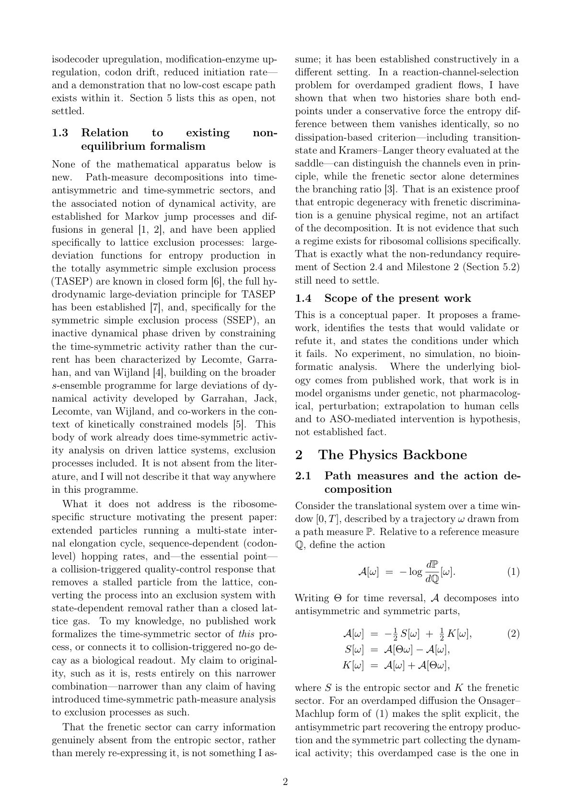
<figcaption class="paper-figure-caption"><b>Fig 1.</b> Low-resolution page preview, page 2</figcaption>
</figure>
<figure class="paper-figure-card">
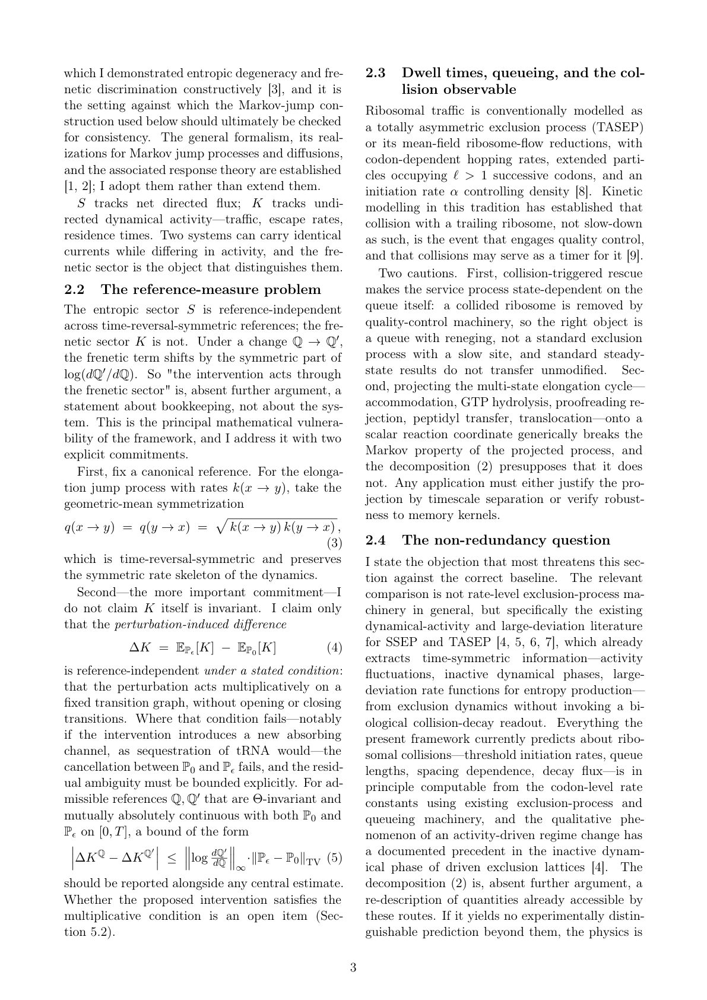
<figcaption class="paper-figure-caption"><b>Fig 2.</b> Low-resolution page preview, page 3</figcaption>
</figure>
<figure class="paper-figure-card">
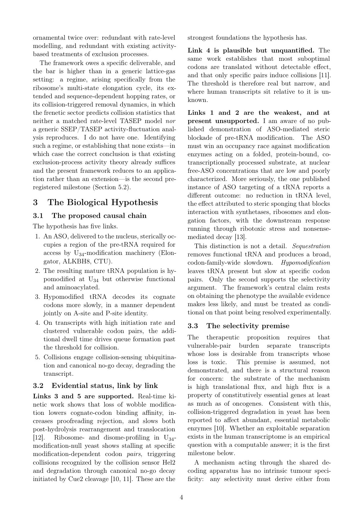
<figcaption class="paper-figure-caption"><b>Fig 3.</b> Low-resolution page preview, page 4</figcaption>
</figure>
<figure class="paper-figure-card">
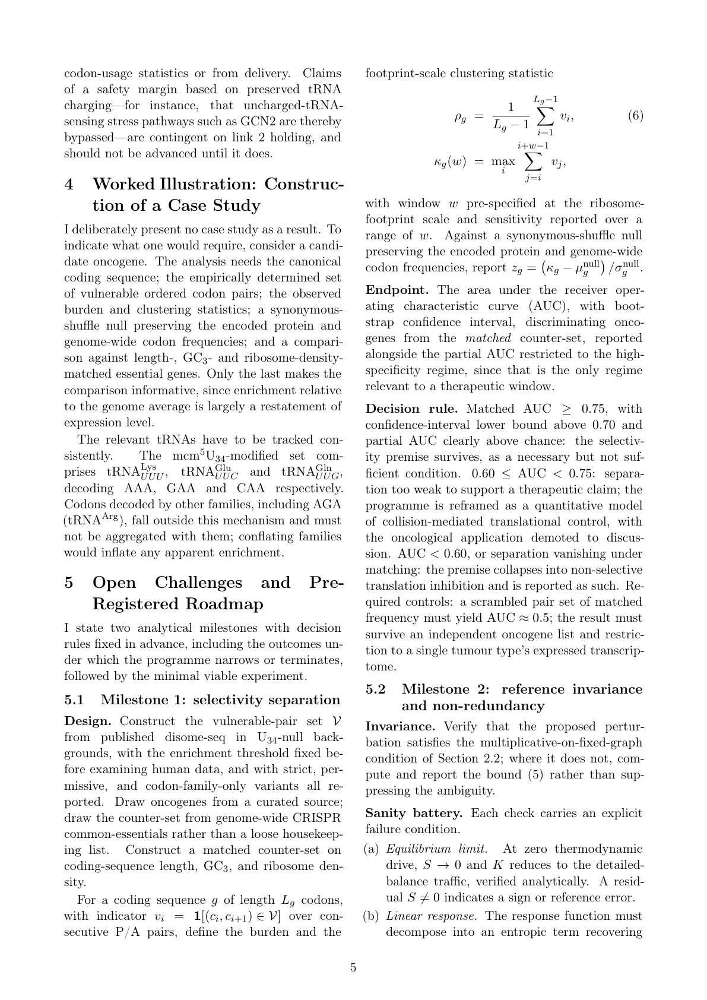
<figcaption class="paper-figure-caption"><b>Fig 4.</b> Low-resolution page preview, page 5</figcaption>
</figure>
<figure class="paper-figure-card">
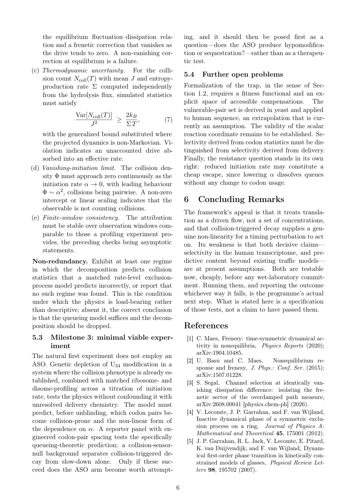
<figcaption class="paper-figure-caption"><b>Fig 5.</b> Low-resolution page preview, page 6</figcaption>
</figure>
</div>

<p><strong>Summary.</strong> This paper proposes a theoretical framework to model collision-triggered transcript decay during translation by applying advanced path-measure techniques from non-equilibrium statistical mechanics. It aims to show that perturbing the <em>timing</em> of translation, rather than just the overall rate, generates unique physical predictions. The work is presented as a research program, requiring rigorous testing against established models to validate its novel physical insights.</p>
<p><strong>Why it may be interesting.</strong> The use of path-measure decomposition to distinguish between rate-level effects and abundance-level effects is a sophisticated non-equilibrium statistical mechanics tool applicable to complex, driven biological systems.</p>
<details>
<summary>Detailed structure</summary>
<p><strong>Main problem.</strong> To develop a rigorous framework to study how perturbing the <em>timing</em> (rate) of molecular processes, rather than just the <em>abundance</em>, can trigger specific biological outcomes, namely collision-triggered transcript decay.</p>
<p><strong>Main result.</strong> The paper establishes a conceptual framework based on path-measure decomposition, proposing specific, falsifiable tests to determine if the predicted dynamics are unique to ribosomal queueing and collision-triggered decay, rather than being derivable from standard exclusion process models.</p>
<p><strong>Method.</strong> The methodology connects the path-measure formulation of non-equilibrium statistical mechanics (decomposing the action into entropic and frenetic sectors) with stochastic modeling of ribosomal traffic.</p>
<p><strong>Model / system.</strong> The system is ribosomal traffic on messenger RNA (mRNA) during translation elongation, modeled as a driven flow involving queue formation and collision-triggered removal. The mathematical tools involve path-measure analysis and comparison against established lattice exclusion models (SSEP/TASEP).</p>
<p><strong>Key observables.</strong> Collision count statistics ($N_{	ext{coll}}(T)$), selectivity metrics (AUC for desirable vs. toxic transcript loss), and the difference in the frenetic term ($\Delta K$).</p>
<p><strong>Important parameters / regimes.</strong> Initiation rate ($\alpha$), codon-pair burden, and the specific perturbation applied via antisense oligonucleotides (ASOs).</p>
<p><strong>Assumptions / limitations.</strong> The framework relies on the Markov property assumption when projecting the multi-state elongation cycle onto a scalar coordinate, and the core claims of selectivity and non-redundancy are currently untested hypotheses.</p>
<p><strong>Paper structure.</strong> The paper is structured as a research program proposal, first introducing the path-measure formalism, then comparing its predictions against existing exclusion process models to test for non-redundancy, and finally outlining a sequence of falsifiable tests (Milestones 1, 2, and 3) that must be passed for the theory to hold.</p>
</details>
<details>
<summary>Abstract</summary>
<p>I connect two literatures developed independently: the path-measure formulation of non-equilibrium statistical mechanics, where a trajectory action decomposes into a time-antisymmetric (entropic) and time-symmetric (frenetic) sector, and the stochastic modelling of ribosomal traffic on messenger RNA. The biological target is a proposed intervention -- antisense oligonucleotide (ASO) interference with wobble-uridine (U34) modification of transfer RNA -- whose intended effect is not to abolish translation but to perturb its timing, driving ribosome collisions and collision-triggered transcript decay preferentially on high-flux, codon-biased transcripts.   Dynamical-activity and large-deviation analyses of generic lattice exclusion models -- notably the symmetric and totally asymmetric simple exclusion processes -- are well established. To my knowledge their formalization specifically for ribosomal traffic queues, translation elongation, and collision-triggered no-go decay remains unoccupied; this paper addresses that narrower gap, not the general one.   Two claims here are load-bearing and untested. First, selectivity: transcripts whose loss is therapeutically desirable are separable, by vulnerable-codon-pair burden, from transcripts whose loss is toxic. Second, non-redundancy: the frenetic decomposition yields predictions, specific to ribosomal queueing and collision-triggered decay, not already obtainable from rate-level exclusion-process models or existing activity/large-deviation analyses of exclusion processes. This paper establishes neither. It specifies both as falsifiable tests with pre-registered decision rules, including outcomes under which the framework should be abandoned or narrowed. It is a research programme proposal, not a result. No new experimental, computational, or bioinformatic results are reported.</p>
</details>
<p><sub><a href="#top">↑ back to top</a></sub></p>

<p><a id="paper-2609.25245"></a></p>
<h3 id="a-dual-region-ytterbium-tweezer-apparatus-with-an-in-vacuum-nanofiber-cavity"><a href="http://arxiv.org/abs/2609.25245v1">A dual-region ytterbium tweezer apparatus with an in-vacuum nanofiber cavity</a></h3>
<p><strong>Authors:</strong> Shunichiro Hashimoto, Hideki Ozawa, Yusuke Hisai, Takao Aoki, Ryotaro Inoue<br>
<strong>Type:</strong> experiment · <strong>Category:</strong> other · <strong>PDF:</strong> <a href="https://arxiv.org/pdf/2609.25245v1">https://arxiv.org/pdf/2609.25245v1</a><br>
<strong>Analysis basis:</strong> full PDF text, analyzed in chunks
<strong>Topic relevance:</strong> <code>analog quantum simulation</code> <strong>3/5</strong> · <code>quantum optics experiment</code> <strong>3/5</strong> · <code>Tavis-Cummings &amp; cavity-many-emitter</code> <strong>2/5</strong> · <code>QC/QI experiment</code> <strong>1/5</strong> · <code>Rydberg arrays</code> <strong>1/5</strong> · <code>interference shaping light</code> <strong>1/5</strong> · <code>quantum measurements</code> <strong>1/5</strong></p>
<div class="figure-strip-hint">↔ Scroll figures horizontally</div>
<div class="paper-figures-scroll">
<figure class="paper-figure-card">
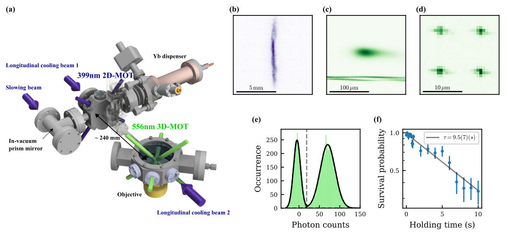
<figcaption class="paper-figure-caption"><b>Fig 1.</b> FIG. 1. Overview of the dual-region 171Yb apparatus and single-atom tweezer operation in the science chamber. (a) Schematic of the apparatus. The source region contains the Yb oven and a 399 nm 2D-MOT. Cold Yb atoms are transported over approximately 240 mm to the spatially separated science chamber using a pulsed sequence based on longitudinal moving molasses, decelerated near the science chamber by the 399 nm beams, and subsequently recaptured in a 556 nm 3D-MOT. The science chamber accommodates the optical-tweezer system and an in-vacuum nanofiber cavity. (b) Fluorescence image of Yb atoms in the 399 nm 2D-MOT with no longitudinal cooling applied. (c) Fluorescence image of Yb atoms in...</figcaption>
</figure>
<figure class="paper-figure-card">
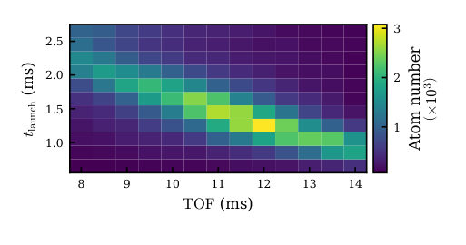
<figcaption class="paper-figure-caption"><b>Fig 2.</b> FIG. 2. Characterization of the pulsed transport sequence. The number of atoms recaptured in the 3D-MOT is shown as a function of time of flight (TOF) and acceleration duration (tlaunch). The duration of the downstream 399 nm decelera- tion pulse is fixed at 2 ms. Each point represents the average of five experimental realizations.</figcaption>
</figure>
<figure class="paper-figure-card">
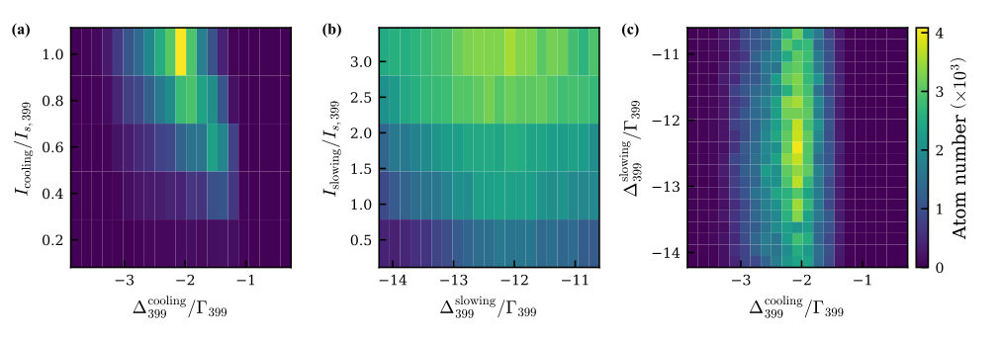
<figcaption class="paper-figure-caption"><b>Fig 3.</b> FIG. 3. Characterization of the 2D-MOT source. The number of atoms delivered by a single transport pulse and recaptured in the 3D-MOT is shown as a function of the detuning and intensity of (a) the transverse 2D-MOT cooling beam and (b) the slowing beam. (c) Recaptured atom number as a function of the cooling- and slowing-beam detunings at (Icooling, Islowing) ≃ (1.0, 3.1)Is,399. Within the available power range, the atom number increases with beam intensity and no power optimum is observed. At the operating detunings (∆cooling 399 , ∆slowing 399 ) ≃(−2.1, −12.5)Γ399 and the maximum available cooling- and slowing- beam powers, a single transport pulse delivers up to 4.0 × 103 atoms to the...</figcaption>
</figure>
<figure class="paper-figure-card">
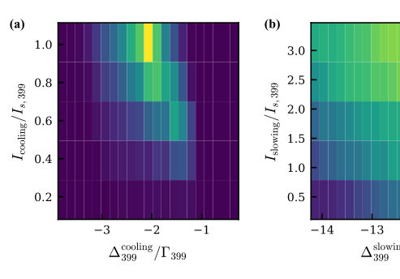
<figcaption class="paper-figure-caption"><b>Fig 4.</b> Figure 3(a) and (b) show the atom number recaptured in the 3D-MOT as functions of the detuning and intensity of the transverse 2D-MOT cooling beam and the slowing beam, respectively. The accessible intensity range is set by the available optical powers, 20 mW for the transverse cooling beam and 15 mW for the slowing beam. Within this range, the delivered atom number increases mono- tonically with increasing cooling- and slowing-beam in- tensities. The largest available powers are used for the measurements in Fig. 3(c). The optimum with respect to optical power is therefore not reached within the avail- able range; nevertheless, the maximum available powers already provide an atom number...</figcaption>
</figure>
</div>

<p><strong>Summary.</strong> The authors report the successful construction and operation of a dual-region apparatus designed to trap single fermionic ytterbium atoms near an in-vacuum nanofiber cavity. They overcome challenges in atom delivery by implementing a pulsed transport sequence, enabling single-atom loading into an optical tweezer array. The key achievement is demonstrating stable, multi-second trapping of single atoms in this complex, integrated quantum system.</p>
<p><strong>Why it may be interesting.</strong> This work is highly relevant as it combines state-of-the-art techniques in cold atom trapping (moving molasses, MOTs) with advanced quantum optics elements (in-vacuum nanofiber cavities) for fundamental quantum physics experiments.</p>
<details>
<summary>Detailed structure</summary>
<p><strong>Main problem.</strong> The primary goal was to develop and demonstrate a dual-region apparatus capable of trapping single fermionic ytterbium atoms near an in-vacuum nanofiber cavity.</p>
<p><strong>Main result.</strong> The system successfully demonstrated single-atom loading into a tweezer array near the cavity and achieved a measurable single-atom trapping lifetime of 9.5(7) seconds.</p>
<p><strong>Method.</strong> The experiment utilized a pulsed transport sequence based on longitudinal moving molasses to move atoms from a source region to a science chamber containing the trapping optics.</p>
<p><strong>Model / system.</strong> The platform involves a dual-region setup using fermionic ytterbium-171 atoms. Atoms are cooled and transported using $399	ext{ nm}$ light, captured in a $3	ext{D-MOT}$ ($556	ext{ nm}$), and finally loaded into optical tweezers positioned near an in-vacuum nanofiber cavity.</p>
<p><strong>Key observables.</strong> Single-atom filling fraction (up to 74.9%), $1/e$ trap lifetime (9.5(7) s), and the number of atoms delivered during transport.</p>
<p><strong>Important parameters / regimes.</strong> Source-to-science chamber distance ($\approx 240	ext{ mm}$), tweezer array distance from nanofiber ($\approx 50\ \mu	ext{m}$), and optimal transport parameters (e.g., $t_{	ext{launch}} \simeq 1.2 	ext{ ms}$).</p>
<p><strong>Assumptions / limitations.</strong> The design assumes that the dual-region architecture can provide sufficient atom flux while maintaining optical access and protecting the nanofiber cavity from untrapped atoms.</p>
<p><strong>Figures summary.</strong> Figure 1 provides an overview of the dual-region apparatus and single-atom tweezer operation, while Figure 2 characterizes the pulsed transport sequence by showing atom number versus time of flight and launch duration.</p>
<p><strong>Paper structure.</strong> The paper details the development of the dual-region apparatus, characterizes the pulsed atom transport sequence from the source to the science chamber, demonstrates single-atom loading into the tweezer array near the cavity, and finally reports the measured trapping lifetime.</p>
</details>
<details>
<summary>Abstract</summary>
<p>We present a dual-region experimental apparatus for trapping single atoms of the fermionic isotope ytterbium-171 (${}^{171}\mathrm{Yb}$) with optical tweezers in a science chamber containing an in-vacuum nanofiber cavity. A source region is located approximately $240\,\mathrm{mm}$ from the science chamber, preserving optical access around the chamber for high-numerical-aperture tweezer optics. A pulsed transport sequence based on longitudinal moving molasses launches atomic pulses toward the science chamber, where they are decelerated and recaptured in a magneto-optical trap. We subsequently load single atoms into a $2\times2$ tweezer array located approximately $50\,\mathrm{μm}$ from the nanofiber and measure a $1/e$ lifetime of $9.5(7)\,\mathrm{s}$. These results demonstrate that the dual-region architecture provides sufficient ${}^{171}\mathrm{Yb}$ atoms for single-atom tweezer operation near an in-vacuum nanofiber cavity.</p>
</details>
<p><sub><a href="#top">↑ back to top</a></sub></p>

<p><a id="paper-2609.25296"></a></p>
<h3 id="effective-study-of-superconducting-quantum-circuits"><a href="http://arxiv.org/abs/2609.25296v1">Effective Study of Superconducting Quantum Circuits</a></h3>
<p><strong>Authors:</strong> Carlos Raul Javier Valdez, Hector Hugo Hernandez Hernandez, Guillermo Chacon-Acosta<br>
<strong>Type:</strong> theory · <strong>Category:</strong> other · <strong>PDF:</strong> <a href="https://arxiv.org/pdf/2609.25296v1">https://arxiv.org/pdf/2609.25296v1</a><br>
<strong>Analysis basis:</strong> full PDF text, analyzed in chunks
<strong>Topic relevance:</strong> <code>Keldysh / 2PI / non-Gaussian methods</code> <strong>3/5</strong> · <code>methods for driven-dissipative</code> <strong>3/5</strong> · <code>QC/QI experiment</code> <strong>1/5</strong> · <code>Tavis-Cummings &amp; cavity-many-emitter</code> <strong>1/5</strong> · <code>analog quantum simulation</code> <strong>1/5</strong> · <code>correlated / nonlocal dissipation</code> <strong>1/5</strong> · <code>driven-dissipative phase transition</code> <strong>1/5</strong> · <code>quantum measurements</code> <strong>1/5</strong></p>
<div class="figure-strip-hint">↔ Scroll figures horizontally</div>
<div class="paper-figures-scroll">
<figure class="paper-figure-card">
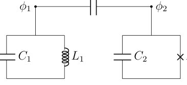
<figcaption class="paper-figure-caption"><b>Fig 1.</b> Figure 2: Circuit diagram of the capacitively coupled cavity–Josephson Junction system. The LC oscillator (left, with capacitance C1 and inductance L1) is coupled to the Josephson junction (right, with Josephson energy EJ and junction capacitance C2) through the coupling capacitance C0.</figcaption>
</figure>
<figure class="paper-figure-card">
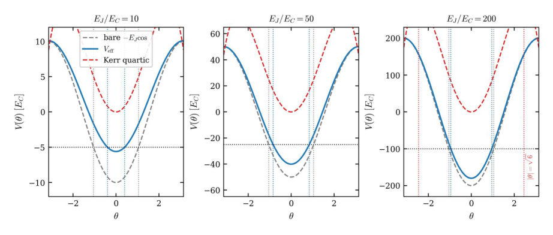
<figcaption class="paper-figure-caption"><b>Fig 2.</b> Figure 3: Effective potential Veff(θ) (Eq. (40), solid blue) compared with the bare cosine (gray dashed) and the fourth-order Kerr quartic (red dashed), for EJ/EC = 10, 50, 200. The all-orders potential preserves the periodicity and boundedness of the cosine at all phase values; the Kerr quartic is unbounded below for |θ| &gt; √</figcaption>
</figure>
<figure class="paper-figure-card">

<figcaption class="paper-figure-caption"><b>Fig 3.</b> Figure 4: Small-oscillation frequency ω01/Ωp vs. EJ/EC: all-orders (blue, Eq. (42)), Kerr (1 − 1/ p</figcaption>
</figure>
<figure class="paper-figure-card">
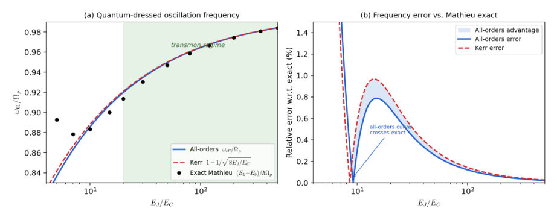
<figcaption class="paper-figure-caption"><b>Fig 4.</b> Figure 5 compares ⟨ˆθ(t)⟩from the all-orders effective dynamics, Eq. (35), with the exact evolution, Eq. (44), at representative values of EJ/EC. For low values of α, the effective trajectory reproduces the exact carrier oscillation and its slow amplitude modulation, and the agreement improves systematically as EJ/EC increases. However, as α gets bigger, the departure between the two trajectories becomes visible already at t/trev ≈0.1–0.2 for EJ/EC = 10, reflecting the larger anharmonicity of the intermediate regime; for EJ/EC = 100 and 1000 the agreement extends progressively further and the residual departure shifts toward trev, where the exact state develops non-Gaussian (Yurke–Stoler...</figcaption>
</figure>
<figure class="paper-figure-card">
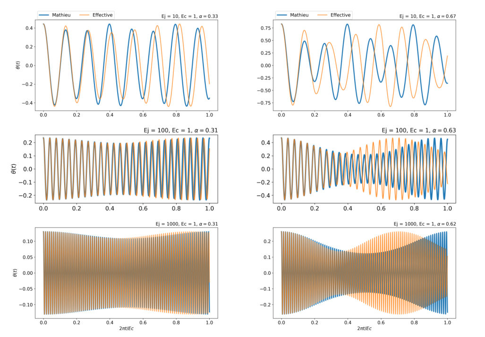
<figcaption class="paper-figure-caption"><b>Fig 5.</b> Figure 5: Flux expectation value ⟨ˆϕ(t)⟩of the all-orders effective dynamics (Eq. (34), orange) against the exact finite-dimensional coherent-state evolution (Eq. (44), blue) for the bare Josephson junction, as a function of dimensionless time over one revival window t ≲trev = 2πℏ/EC. Panels: EJ/EC = 10, 100, 1000, with α = 0.3 (left) and α = 0.6 (right). On the left hand side, as EJ/EC increases the effective trajectory converges to the exact result, whereas on the right hand side, for EJ/EC = 10 the departure is already visible at t/trev ≈0.1–0.2 due to the larger anharmonicity in the intermediate regime; for EJ/EC = 100 and 1000 the agreement extends much further and the residual...</figcaption>
</figure>
</div>

<p><strong>Summary.</strong> This paper develops advanced theoretical tools to study superconducting circuits, particularly focusing on the Josephson junction nonlinearity. By employing Momentous Quantum Mechanics with a Gaussian closure, the authors derive accurate, non-perturbative effective Hamiltonians. They rigorously compare this approach against standard approximations and various models of dissipation, offering a robust framework for analyzing quantum dynamics in superconducting quantum devices.</p>
<p><strong>Why it may be interesting.</strong> This work is highly relevant as it tackles the non-perturbative dynamics of superconducting circuits, a cornerstone of modern quantum optics and quantum information research, by providing advanced techniques to handle strong nonlinearities and dissipation.</p>
<details>
<summary>Detailed structure</summary>
<p><strong>Main problem.</strong> The paper addresses the non-perturbative study of superconducting circuits, overcoming the limitations of standard approximations (like Taylor expansions) when modeling the Josephson junction potential.</p>
<p><strong>Main result.</strong> The authors derive a closed-form effective Hamiltonian using a Gaussian closure method, and show that the Bateman dynamics provides a faithful semiclassical description of dissipation that reproduces the Lindblad benchmark for weak damping.</p>
<p><strong>Method.</strong> The study employs Momentous Quantum Mechanics (MQM) combined with a Gaussian closure technique to resum infinite moment hierarchies, alongside comparisons between various dissipation models (Lindblad, Bateman, Caldirola-Kanai).</p>
<p><strong>Model / system.</strong> The physical system is superconducting circuits, modeled by Josephson junctions (JJ) and coupled to cavities or resonators. The dynamics are governed by Hamiltonians derived from Lagrangian formulations, including the standard JJ Hamiltonian and coupled cavity-JJ systems.</p>
<p><strong>Key observables.</strong> Quantum-dressed frequency ($\omega_{	ext{eff}}$), the quantum width $G_{2,0}(t)$, and the comparison of physical uncertainty ($U_{	ext{phys}}(t)$) versus canonical uncertainty ($U_{	ext{can}}(t)$).</p>
<p><strong>Important parameters / regimes.</strong> The dimensionless ratio $E_J/E_C$ controls the regime, with the transmon regime ($E_J/E_C \gg 1$) being a focus. The validity of approximations is tested by the damping parameter $\lambda/ \omega_1$.</p>
<p><strong>Assumptions / limitations.</strong> The primary approximation is the Gaussian closure assumption, which is monitored by the quantum width $G_{2,0}(t)$. Standard treatments are limited by double truncation errors.</p>
<p><strong>Figures summary.</strong> Figures illustrate the circuit diagram, the coherent quantum-state-transfer in coupled cavity dynamics, and the decay of physical uncertainty in damped oscillators.</p>
<p><strong>Paper structure.</strong> The paper progresses from establishing the fundamental circuit models (JJ, cavity-JJ) to introducing the advanced theoretical framework (MQM, Gaussian closure). It then benchmarks this method against known results for dissipation (Lindblad vs. Bateman) and analyzes the resulting dynamics and error control.</p>
</details>
<details>
<summary>Abstract</summary>
<p>We apply the momentous quantum mechanics formalism to the non-perturbative study of superconducting circuits in the transmon regime, deriving effective equations of motion for the bare Josephson junction (JJ), the cavity--JJ system, and a dissipative resonator. A Gaussian closure on the hierarchy of quantum moments resums the full cosine nonlinearity into the closed-form effective Hamiltonian $\tfrac{1}{2}[V(φ+φ_s)+V(φ-φ_s)]$, which is non-perturbative and preserves the periodicity and boundedness of the Josephson potential at all phase amplitudes; the standard Kerr (Duffing) approximation is recovered as a special case. We derive the quantum-dressed frequency $ω_{\rm eff}=Ω_p\sqrt{\cos(φ_{\rm zpf}/φ_0)}$, and benchmark the effective dynamics against exact Mathieu-function diagonalization, with the quantum width $G^{2,0}(t)$ providing the most sensitive diagnostic of the closure's validity and marks the boundary of the Gaussian approximation more sharply than $\langle\hatφ\rangle(t)$ does. We compare the Caldirola--Kanai, Bateman, and Lindblad descriptions: the Bateman dynamics, quantized with a switched symplectic structure, preserves the Heisenberg bound, admits exact closed-form moment solutions, and reproduces the Lindblad benchmark for weak damping, i.e., within the analytic error bound $(λ/ω_1)^2\,φ_{\rm zpf}^2$.</p>
</details>
<p><sub><a href="#top">↑ back to top</a></sub></p>

<p><a id="paper-2609.25418"></a></p>
<h3 id="coherent-lattice-dynamics-distinguish-holstein-and-su-schrieffer-heeger-electron-phonon-coupling"><a href="http://arxiv.org/abs/2609.25418v1">Coherent lattice dynamics distinguish Holstein and Su-Schrieffer-Heeger electron-phonon coupling</a></h3>
<p><strong>Authors:</strong> Debshikha Banerjee, Jinu Thomas, G. Alvarez, T. P. Devereaux, T. A. Maier, S. Johnston<br>
<strong>Type:</strong> theory · <strong>Category:</strong> strongly correlated electrons · <strong>PDF:</strong> <a href="https://arxiv.org/pdf/2609.25418v1">https://arxiv.org/pdf/2609.25418v1</a><br>
<strong>Analysis basis:</strong> full PDF text, analyzed in chunks
<strong>Topic relevance:</strong> <code>analog quantum simulation</code> <strong>3/5</strong> · <code>methods for driven-dissipative</code> <strong>3/5</strong> · <code>Frenkel-Kontorova</code> <strong>2/5</strong> · <code>Keldysh / 2PI / non-Gaussian methods</code> <strong>1/5</strong> · <code>driven-dissipative phase transition</code> <strong>1/5</strong> · <code>non-equilibrium universality</code> <strong>1/5</strong></p>
<div class="figure-strip-hint">↔ Scroll figures horizontally</div>
<div class="paper-figures-scroll">
<figure class="paper-figure-card">
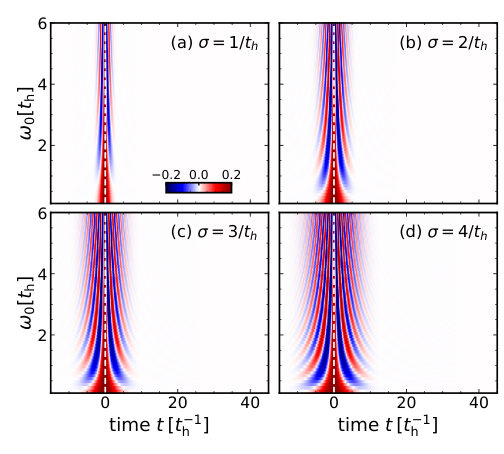
<figcaption class="paper-figure-caption"><b>Fig 1.</b> FIG. 1. (a)-(d) Pump profile as a function of time and pump frequency ω0 for increasing values of pump width σ as in- dicated in the panels. The remaining pump parameters are fixed at A0 = 0.2 and t0 = 0 (as indicated by the dashed white line).</figcaption>
</figure>
<figure class="paper-figure-card">
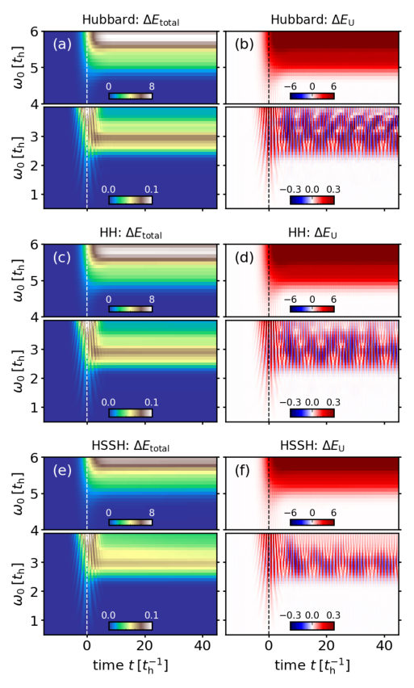
<figcaption class="paper-figure-caption"><b>Fig 2.</b> FIG. 2. Pump-induced electronic response of the half-filled (a)-(b) Hubbard, (c)-(d) HH, and (e)-(f) HSSH models for an L = 12 sites chain, with U = 8th, g = 0.2th, ωph = th. The pump parameters are fixed at A0 = 0.2, σ = 3/th, t0 = 0, δt = 0.1/th while varying pump frequency ω0. The columns show changes in total energy (∆Etotal) and Hubbard interaction energy (∆EU) with respect to their GS values. Each panel is divided into lower and higher ω0 regions, containing separate color bars. The dashed lines in the plots indicate the pump center t0 = 0. We do not observe any substantial changes in the responses between the 3 models.</figcaption>
</figure>
<figure class="paper-figure-card">

<figcaption class="paper-figure-caption"><b>Fig 3.</b> FIG. 3. Pump-induced lattice response of the half-filled (a)- (c) HH, and (d)-(f) HSSH models for an L = 12 sites chain, with U = 8th, g = 0.2th, ωph = th. The pump parameters are fixed at A0 = 0.2, σ = 3/th, t0 = 0, δt = 0.1/th while vary- ing pump frequency ω0. From top to bottom, the rows show the change in phonon energy (∆Eph), e-ph energy (∆Ee−ph), and lattice displacement at the center bond (∆ˆ Xc disp), respec- tively. The color bar in panel (a) is shared by all other panels. The black dashed (green dash-dotted) lines in the panels cor- respond to the phonon (quadratic electronic resonance) ener- gies.</figcaption>
</figure>
<figure class="paper-figure-card">
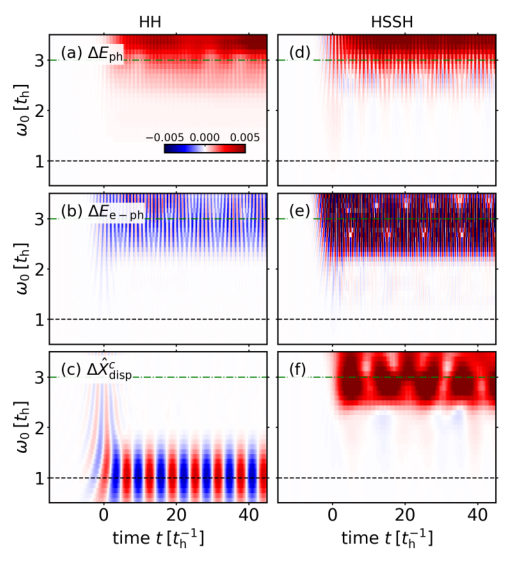
<figcaption class="paper-figure-caption"><b>Fig 4.</b> Figure 3 presents the time evolution of the lattice- related observables for the HH and HSSH models. The model and pump parameters are the same as those used in Fig. 2. Here, we focus on the lower-energy response extending from the quadratic resonance at ω0 ≤3.5th down to below the phonon energy. Appendix C provides</figcaption>
</figure>
<figure class="paper-figure-card">
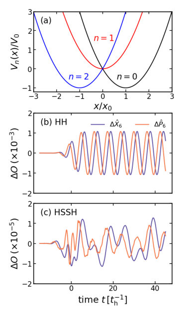
<figcaption class="paper-figure-caption"><b>Fig 5.</b> FIG. 4. (a) Potential energy curves Vn(X) [see Eq. (14)] for an atom in the Holstein model with an average site occupancy of n = 0 (solid black), 1 (solid red), or 2 (solid blue). Here, X = 0 is the equilibrium position of the oscillator when n = 1. For n = 0 (2), the oscillator’s equilibrium position shifts to ±X0 = ±α/(Mω2 ph) while the potential energy minimum reduces to Vn(±X0) ≡V0 = −α2/(2Mω2 ph). (b), (c) The change in the atomic position ∆ˆ Xc and momentum ∆ˆPc for the HH and HSSH models, respectively, for an L = 12 site chain with U = 8th, g = 0.2th, ωph = th. The pump parameters are fixed at A0 = 0.2, σ = 3/th, t0 = 0, δt = 0.1/th, and ω0 = ωph = th.</figcaption>
</figure>
</div>

<p><strong>Summary.</strong> This work uses time-dependent DMRG simulations to compare the non-equilibrium response of two electron-phonon coupling models: Holstein and Su-Schrieffer-Heeger. The authors find that while electronic measurements fail to distinguish the couplings, the resulting coherent lattice dynamics provide a robust signature, showing distinct phonon oscillations for the Holstein model versus none for the SSH model.</p>
<p><strong>Why it may be interesting.</strong> The clear distinction in lattice dynamics provides a novel, measurable diagnostic tool for probing the microscopic nature of electron-phonon coupling in strongly correlated materials, which is highly relevant to understanding high-Tc superconductivity.</p>
<details>
<summary>Detailed structure</summary>
<p><strong>Main problem.</strong> To determine if coherent lattice dynamics can distinguish between different microscopic electron-phonon (e-ph) coupling mechanisms (Holstein vs. Su-Schrieffer-Heeger) when the system is driven out of equilibrium.</p>
<p><strong>Main result.</strong> While electronic responses are similar, the lattice dynamics differ substantially: the Holstein model shows long-lived coherent phonon oscillations, whereas the SSH model does not.</p>
<p><strong>Method.</strong> Time-dependent density matrix renormalization group (DMRG) simulations were used to calculate the time evolution of electronic and lattice observables following an ultrafast pump pulse.</p>
<p><strong>Model / system.</strong> The study investigates a one-dimensional Mott insulator coupled to phonons, comparing the Hubbard-Holstein (HH) model (local potential modulation) and the Hubbard-SSH (HSSH) model (hopping modulation).</p>
<p><strong>Key observables.</strong> Lattice dynamics (e.g., $\Delta E_{	ext{ph}}$, $\Delta \hat{X}_{c	ext{disp}}$) and electronic observables ($\Delta E_{	ext{total}}$, $\Delta E_U$).</p>
<p><strong>Important parameters / regimes.</strong> The system is analyzed in the Mott-insulating regime, with key parameters including the coupling strength ($\alpha$), phonon frequency ($\omega_{	ext{ph}}$), and pump frequency ($\omega_0$).</p>
<p><strong>Assumptions / limitations.</strong> The contrast in lattice dynamics is robust against changes in phonon frequency and pump parameters.</p>
<p><strong>Figures summary.</strong> Figures illustrate the pump-induced electronic response ($\Delta E_{	ext{total}}$) showing qualitative similarity, contrasted by figures showing the lattice response, where HH exhibits clear coherent oscillations while HSSH does not.</p>
<p><strong>Paper structure.</strong> The paper first establishes the problem by comparing the Hamiltonians of HH and HSSH models. It then simulates the non-equilibrium dynamics using DMRG, showing that while electronic properties are insensitive to the coupling type, the resulting coherent lattice dynamics provide a clear, distinguishing signature.</p>
</details>
<details>
<summary>Abstract</summary>
<p>Ultrafast pump-probe spectroscopy provides a powerful means to investigate electron-phonon (e-ph) interactions in strongly correlated systems. Nevertheless, the question of how different microscopic e-ph coupling mechanisms influence the lattice's nonequilibrium response has not been widely addressed. We perform time-dependent density matrix renormalization group simulations on a pumped one-dimensional Mott insulator coupled to phonons through either Holstein or Su-Schrieffer-Heeger (SSH) interactions. The electronic responses of the two models are qualitatively similar in the Mott-insulating regime and are governed by the same excitations and resonance conditions of the Hubbard model. In contrast, the lattice dynamics of the two models differ substantially. While the Hubbard-Holstein model exhibits long-lived coherent phonon oscillations when the pump resonates with the bare phonon frequency, no such oscillations are observed for the Hubbard-SSH model. These contrasting responses remain robust against changes in phonon frequency and pump parameters, suggesting that coherent lattice dynamics can provide a direct nonequilibrium probe of the microscopic form of e-ph coupling.</p>
</details>
<p><sub><a href="#top">↑ back to top</a></sub></p>

<p><a id="paper-2609.25753"></a></p>
<h3 id="photon-statistics-control-of-strong-field-rydberg-state-excitation"><a href="http://arxiv.org/abs/2609.25753v1">Photon-Statistics Control of Strong-Field Rydberg-State Excitation</a></h3>
<p><strong>Authors:</strong> Tao Jiang, Jinlei Liu, Haopu Dou, Lingyi Zhao, Peng Xiang, Liangjun Peng, Renyu Wang, Jing Zhao, Xiaowei Wang, Yue Lang, Zengxiu Zhao<br>
<strong>Type:</strong> theory · <strong>Category:</strong> other · <strong>PDF:</strong> <a href="https://arxiv.org/pdf/2609.25753v1">https://arxiv.org/pdf/2609.25753v1</a><br>
<strong>Analysis basis:</strong> full PDF text, analyzed in chunks
<strong>Topic relevance:</strong> <code>interference shaping light</code> <strong>3/5</strong> · <code>methods for driven-dissipative</code> <strong>2/5</strong> · <code>Full counting statistics</code> <strong>1/5</strong> · <code>Keldysh / 2PI / non-Gaussian methods</code> <strong>1/5</strong> · <code>Rydberg arrays</code> <strong>1/5</strong> · <code>analog quantum simulation</code> <strong>1/5</strong> · <code>quantum measurements</code> <strong>1/5</strong></p>
<div class="figure-strip-hint">↔ Scroll figures horizontally</div>
<div class="paper-figures-scroll">
<figure class="paper-figure-card">
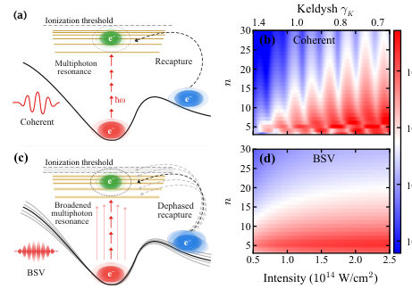
<figcaption class="paper-figure-caption"><b>Fig 1.</b> FIG. 1. Photon-statistics modification of Rydberg-state exci- tation (RSE). (a), (c) Schematic illustrations of RSE driven by coherent and bright-squeezed-vacuum (BSV) states, re- spectively. Rydberg states are populated either through mul- tiphoton excitation into AC-Stark-shifted resonances below the ionization threshold or through tunneling release followed by electron recapture. A coherent field provides a deter- ministic waveform, leading to well-defined multiphoton reso- nance (red) conditions and phase-correlated recapture (black) pathways. In contrast, BSV represents a broad ensemble of coherent-field amplitudes, which broadens access to multipho- ton resonances and reduces the...</figcaption>
</figure>
<figure class="paper-figure-card">

<figcaption class="paper-figure-caption"><b>Fig 2.</b> FIG. 2. Regime-dependent response of ionization and Rydberg-state excitation to photon statistics. (a) Represen- tative electric-field waveforms for coherent, BSV, and phase- squeezed coherent (PSC) states at the same mean peak in- tensity. (b) Ionization probabilities and (c) total Rydberg- state-excitation (RSE) yields, summed over 3 ≤n ≤30, as functions of the mean peak intensity. Results are shown for coherent and BSV states, together with PSC states at rela- tive fluctuation strengths χ = 10−4 and 1. Field fluctuations enhance ionization over the displayed range, while their ef- fect on RSE is regime dependent. RSE is enhanced in the multiphoton-dominated regime but suppressed in the...</figcaption>
</figure>
<figure class="paper-figure-card">

<figcaption class="paper-figure-caption"><b>Fig 3.</b> FIG. 3. Rydberg excitation and recapture-path interfer- ence under PSC states, with the relative fluctuation strength χ = 0–10−3. RSE yields as functions of the mean peak inten- sity calculated using (a) TDSE and (b) a quantum-statistical recapture (QSR) model. (c) Incoherent individual-path con- tribution Yinc and (d) interference contribution Yint in the QSR model, as defined in Eq. (10) and summed over final states. Color encodes χ. The inset shows the recapture-path pair coherence factor ⟨e−Djk⟩at fixed total mean intensity I = 2 × 1014 W/cm2. Increasing χ leaves the individual-path contribution nearly unchanged but progressively reduces the interference contrast, indicating that PSC...</figcaption>
</figure>
<figure class="paper-figure-card">

<figcaption class="paper-figure-caption"><b>Fig 4.</b> FIG. 4. Photon-statistical imprint on the parity composition of the final Rydberg manifold. (a), (b) Normalized orbital- angular-momentum distributions of the Rydberg population for coherent driving and PSC driving with χ = 10−3, respec- tively. (c) Rydberg-manifold parity PR(I) as a function of the mean peak intensity for coherent, PSC, and BSV driv- ing. Positive (negative) values of PR indicate predominantly even- (odd-) parity excitation, whereas PR ≃0 corresponds to a parity-mixed manifold. Increasing field fluctuations drive the strongly parity-selective coherent-field response toward a parity-mixed final-state distribution.</figcaption>
</figure>
</div>

<p><strong>Summary.</strong> This paper demonstrates that photon statistics provide a new control knob for strong-field atomic physics, specifically controlling Rydberg-state excitation. Using advanced quantum-optical models, the authors show that field fluctuations enhance excitation in the multiphoton regime but suppress it in the tunneling regime. This highlights that field statistics can independently control both the probability and the symmetry of the final bound electronic state.</p>
<p><strong>Why it may be interesting.</strong> This work directly addresses how nonclassical light properties (photon statistics) can be harnessed to control quantum dynamics, offering a powerful tool for manipulating final-state symmetries and excitation probabilities in atomic physics.</p>
<details>
<summary>Detailed structure</summary>
<p><strong>Main problem.</strong> The study investigates how the statistical properties of the driving laser field (photon statistics) can be used as a novel control mechanism to govern the formation of bound states, specifically Rydberg-state excitation (RSE), in strong-field atomic interactions.</p>
<p><strong>Main result.</strong> Field fluctuations enhance multiphoton RSE by broadening resonance access, but they suppress the RSE mediated by tunneling, a suppression attributed to the ensemble-induced dispersion of relative path phases.</p>
<p><strong>Method.</strong> The research employs a combination of a quantum-optical phase-space formulation coupled to time-dependent Schrödinger equation (TDSE) calculations and a Quantum-Statistical Recapture (QSR) model.</p>
<p><strong>Model / system.</strong> The system models an atom (like Hydrogen) interacting with intense quantum light fields, comparing coherent, Bright Squeezed Vacuum (BSV), and Phase-Squeezed Coherent (PSC) states. The dynamics are governed by the joint atom-field density operator.</p>
<p><strong>Key observables.</strong> Rydberg-state excitation (RSE) yield, Rydberg-manifold parity, and the decomposition of RSE into individual-path and interference components.</p>
<p><strong>Important parameters / regimes.</strong> Photon statistics (field fluctuations), mean peak intensity, and the distinction between the multiphoton and tunneling ionization regimes.</p>
<p><strong>Assumptions / limitations.</strong> The analysis utilizes the electric-dipole approximation and relies on the QSR model, which treats the field statistics via ensemble averaging.</p>
<p><strong>Figures summary.</strong> Figures illustrate RSE dynamics comparing coherent vs. BSV driving, showing yield dependence on intensity, and demonstrating how photon statistics reshape the parity composition of the final Rydberg manifold.</p>
<p><strong>Paper structure.</strong> The paper systematically compares the effects of different field statistics (coherent vs. squeezed) on RSE across different intensity regimes, using the QSR model to quantify the enhancement in the multiphoton regime and the suppression in the tunneling regime.</p>
</details>
<details>
<summary>Abstract</summary>
<p>Photon statistics provides a new control dimension for strong-field bound-state formation. Using a quantum-optical phase-space formulation coupled to time-dependent Schrödinger-equation calculations, we show that field fluctuations enhance multiphoton Rydberg excitation by broadening AC-Stark-shifted resonances, but suppress tunneling-mediated recapture even as ionization increases. A quantum-statistical recapture model attributes the latter to ensemble-induced dispersion of relative path phases. Photon statistics also reshapes Rydberg-manifold parity, linking field statistics to recapture coherence and final-state symmetry.</p>
</details>
<p><sub><a href="#top">↑ back to top</a></sub></p>

<p><a id="paper-2609.25593"></a></p>
<h3 id="resonant-multi-harmonic-acousto-optics-for-programmable-frequency-control-of-visible-light-in-a-cmos-platform"><a href="http://arxiv.org/abs/2609.25593v1">Resonant multi-harmonic acousto-optics for programmable frequency control of visible light in a CMOS platform</a></h3>
<p><strong>Authors:</strong> Jacob M. Freedman, Matthew J. Storey, Daniel Dominguez, Andrew Leenheer, Nils T. Otterstrom, Matt Eichenfield<br>
<strong>Type:</strong> experiment · <strong>Category:</strong> quantum information and computing · <strong>PDF:</strong> <a href="https://arxiv.org/pdf/2609.25593v1">https://arxiv.org/pdf/2609.25593v1</a><br>
<strong>Analysis basis:</strong> full PDF text, analyzed in chunks
<strong>Topic relevance:</strong> <code>QC/QI experiment</code> <strong>3/5</strong> · <code>interference shaping light</code> <strong>3/5</strong> · <code>quantum optics experiment</code> <strong>3/5</strong> · <code>analog quantum simulation</code> <strong>1/5</strong></p>
<div class="figure-strip-hint">↔ Scroll figures horizontally</div>
<div class="paper-figures-scroll">
<figure class="paper-figure-card">

<figcaption class="paper-figure-caption"><b>Fig 1.</b> Figure 1. Design and working principle of multi-harmonic acousto-optic phase modulators. a Rendering of the modulator depicting a released microstructure that supports piezoelectrically excitable breathing-mode mechanical resonances and propagating optical modes. The right inset shows two simulated displacement profiles of harmonically spaced mechanical resonances and the transverse-electric optical mode to which they are coupled. The diagram in the top right depicts the layer stack and geometry of the device’s cross-section. b Schematic showing the working principle of two-tone harmonic phase modulation. Modulation at Ωproduces a Bessel-weighted comb, then each of its comblines acts as a...</figcaption>
</figure>
<figure class="paper-figure-card">

<figcaption class="paper-figure-caption"><b>Fig 2.</b> Figure 2. Multi-wafer production of dual-harmonic resonantly enhanced modulators. a Optical micrograph of the chip showing a grating-coupled waveguide meandering through several devices. The grating couplers, microwave pads, microwave routing, and an acousto-optic structure are indicated. b Measured microwave reflection S11 versus frequency for devices with structure widths ranging from 1.15 µm to 1.60 µm (vertically offset for clarity). Breathing-mode resonances appear as sharp dips, and a pair of optomechanically coupled modes is shown in red and blue. The red band roughly indicates where the second mode must exist to enable dual-harmonic modulation. c Optical micrograph of a portion of...</figcaption>
</figure>
<figure class="paper-figure-card">

<figcaption class="paper-figure-caption"><b>Fig 3.</b> Figure 3. Integrated programmable gigahertz-scale frequency control of visible light. a Schematic of the two- tone modulation: the modulation depths β1 and β2 together with the relative phase ψ determine the output spectrum. b–e Conversion efficiency to the zeroth, ±1, ±2, and ±3 order sidebands versus the relative phase between the drive tones, with modulation depths fixed at the values that maximize +1 conversion. Markers are measurements, and solid curves are a model accounting for nonlinear mechanical second-harmonic generation. f Measured conversion efficiency for orders −3 to 3 with the drive optimized for +1 conversion. g Measured conversion efficiency for the carrier and ±1...</figcaption>
</figure>
<figure class="paper-figure-card">

<figcaption class="paper-figure-caption"><b>Fig 4.</b> Figure 4. Concatenating devices for a scalable path to more harmonics. a Schematic showing how each harmonic can be generated in its own acousto-optic structure, with a single optical waveguide routed through them in series. The labels w1, w2, and w3, indicate that each structure has a unique width designed for modulation at Ω, 2Ω, and 3Ω, respectively. b Simulated strain profile of the 3.39 GHz breathing mode in the modified geometry with a structure width of 900 nm and a core width of 600 nm. c Simulated transverse-electric optical mode at 730 nm in the same geometry. d Experimentally measured half-wave power versus frequency for the third-harmonic mode, together with Modes 1 and 2 of a...</figcaption>
</figure>
<figure class="paper-figure-card">

<figcaption class="paper-figure-caption"><b>Fig 5.</b> Figure 5. Application-specific advantages of multi- harmonic modulation. a Maximum achievable single- sideband conversion efficiency versus the number of harmoni- cally related drive tones, obtained by numerical optimization over the modulation depths {βn} and relative phases {ψn}. The largest single increase, from 33.9 % to 55 %, comes from adding the second harmonic. Insets show the modulation depths βn required at the optima for three and six harmonics. b Calculated amplitude modulation generated at a target fre- quency Ωq after a group-delay-dispersion element for drives composed of the indicated sub-harmonics and harmonics of Ω (blue) compared to driving at single tones (orange)....</figcaption>
</figure>
</div>

<p><strong>Summary.</strong> This paper presents a novel acousto-optic modulator design on a CMOS platform that overcomes the spectral limitations of single-frequency modulation. By engineering the structure to support multiple, harmonically spaced resonances, the authors can synthesize complex, non-sinusoidal light waveforms. This breakthrough significantly enhances frequency control for visible light, making it highly relevant for scaling quantum gate operations.</p>
<p><strong>Why it may be interesting.</strong> This work directly addresses a critical hardware bottleneck in quantum computing: generating high-fidelity, high-frequency optical control signals. The demonstrated high efficiency and manufacturability are crucial for integrating quantum light sources with classical photonic infrastructure.</p>
<details>
<summary>Detailed structure</summary>
<p><strong>Main problem.</strong> Scaling quantum control for atomic, ionic, and solid-state emitters requires high-power, gigahertz-frequency spectral control of visible light in a manufacturable platform.</p>
<p><strong>Main result.</strong> The authors demonstrated a method using harmonically spaced resonances to achieve programmable, non-sinusoidal modulation waveforms, significantly improving frequency-shifting efficiency and suppression levels compared to single-tone systems.</p>
<p><strong>Method.</strong> They engineered a silicon nitride microstructure to support multiple, harmonically spaced mechanical resonances, which are then piezoelectrically controlled to synthesize complex modulation signals.</p>
<p><strong>Model / system.</strong> The physical system is an acousto-optic modulator fabricated on a 200 mm CMOS platform using silicon nitride photonics integrated with an aluminum nitride piezoelectric actuator. The modulation relies on coupling multiple mechanical resonances to a guided visible-wavelength optical mode.</p>
<p><strong>Key observables.</strong> Conversion efficiency (up to 50% sideband conversion), frequency shift suppression (60 dB carrier, 53 dB image suppression), and the ability to generate flat multi-line frequency combs.</p>
<p><strong>Important parameters / regimes.</strong> Harmonically spaced resonance frequencies (e.g., 1.14 GHz and 2.28 GHz), modulation depths ($eta_n$), and relative phase control.</p>
<p><strong>Assumptions / limitations.</strong> The technique overcomes the spectral limitation imposed by single-tone modulation by utilizing multiple, harmonically spaced resonances, which is shown to be scalable to more harmonics.</p>
<p><strong>Figures summary.</strong> Figures illustrate the device structure, the principle of two-tone harmonic phase modulation, and the resulting spectral comb lines. Supplementary figures detail the theoretical modeling of sideband generation and efficiency optimization.</p>
<p><strong>Paper structure.</strong> The paper first identifies the need for high-speed, programmable light control for quantum systems. It then proposes the use of multi-harmonic acousto-optics on a CMOS platform. The core work involves demonstrating the synthesis of tailored waveforms and achieving record suppression levels, concluding with discussions on scalability and quantum applications.</p>
</details>
<details>
<summary>Abstract</summary>
<p>Scaling quantum control for atoms, ions, and solid-state emitters requires gigahertz-frequency spectral control of high-power visible light in a volume-manufacturable platform. Silicon nitride photonics provides high power handling and CMOS-foundry compatibility but has no intrinsic mechanism for high-speed modulation. Integration with piezoelectric materials enables acousto-optic phase modulation, and mechanical resonant enhancement has made it efficient at gigahertz frequencies. However, a single resonance restricts the modulation waveform to a single tone, imposing Bessel-function sideband amplitudes and limiting frequency-shifting efficiency to 33.9%. Here we engineer a silicon nitride acousto-optic microstructure to support harmonically spaced resonances at 1.14 GHz and 2.28 GHz, each strongly optomechanically coupled to a 730 nm guided optical mode, so that tailored non-sinusoidal modulation waveforms can be resonantly synthesized. By piezoelectrically controlling the two mechanical amplitudes and their relative phase, we demonstrate 50% conversion to one sideband (1.5x the single-tone theoretical maximum), a flat seven-line comb, and a frequency shift with 60 dB carrier and 53 dB image suppression - to our knowledge the highest reported for an integrated modulator. The devices are fabricated in a 200 mm CMOS foundry, and we measure 91.7% yield without post-fabrication tuning across 36 devices from three wafers. We also show how the technique can be straightforwardly scaled to three or more harmonics. This result overcomes the trade-off between resonant enhancement and spectral programmability, with important consequences including improved single-qubit gate efficiency for hyperfine qubits.</p>
</details>
<p><sub><a href="#top">↑ back to top</a></sub></p>

<p><a id="paper-2609.25795"></a></p>
<h3 id="an-asymmetric-atom-photon-architecture-for-device-independent-quantum-key-distribution-over-25km"><a href="http://arxiv.org/abs/2609.25795v1">An asymmetric atom-photon architecture for device-independent quantum key distribution over 25\,km</a></h3>
<p><strong>Authors:</strong> Jonas Meiers, Christian Haen, Max Bergerhoff, Pascal Baumgart, Tobias Bauer, Christoph Becher, Jürgen Eschner<br>
<strong>Type:</strong> experiment · <strong>Category:</strong> quantum information and computing · <strong>PDF:</strong> <a href="https://arxiv.org/pdf/2609.25795v1">https://arxiv.org/pdf/2609.25795v1</a><br>
<strong>Analysis basis:</strong> full PDF text, analyzed in chunks
<strong>Topic relevance:</strong> <code>QC/QI experiment</code> <strong>3/5</strong> · <code>quantum optics experiment</code> <strong>3/5</strong> · <code>analog quantum simulation</code> <strong>1/5</strong> · <code>interference shaping light</code> <strong>1/5</strong> · <code>quantum measurements</code> <strong>1/5</strong></p>
<div class="figure-strip-hint">↔ Scroll figures horizontally</div>
<div class="paper-figures-scroll">
<figure class="paper-figure-card">

<figcaption class="paper-figure-caption"><b>Fig 1.</b> FIG. 2. Scheme showing relevant 40Ca+ levels and transitions used for atom-photon entanglement generation and atomic state readout. Excitation from S1/2 to P3/2 (blue arrow) pre- pares the excited state, subsequent spontaneous decay to D5/2 generates a single photon (wavy red arrows) whose polariza- tion is entangled with the Zeeman sublevel in D5/2. Sub- sequent laser pulses (purple arrows) coherently transfer the atomic qubit state from D5/2 to S1/2, where an RF pulse with variable phase rotates the measurement basis. Final state readout employs shelving pulses and state-selective fluores- cence (see text).</figcaption>
</figure>
<figure class="paper-figure-card">

<figcaption class="paper-figure-caption"><b>Fig 2.</b> FIG. 1. Schematic of the atom-photon QKD link. A trapped 40Ca+ ion emits 854 nm photons that are frequency-converted to the telecom C-band (1550 nm), transmitted over 25 km of fiber, converted back to 854 nm, and analyzed in polarization using single-photon detectors (SNSPDs). A separate classical fiber distributes White Rabbit timing and transmits electronic heralding signals from Bob to Alice to trigger the ion readout. Active polarization stabilization (APC) is applied on the quantum fiber to compensate slow drifts. For more details, see text. PMT: photomultiplier tube; HALO: high-numerical- aperture laser objective; RF: radio frequency; APC: automated polarization drift compensation;...</figcaption>
</figure>
<figure class="paper-figure-card">

<figcaption class="paper-figure-caption"><b>Fig 3.</b> FIG. 3. CHSH parameter S versus Larmor phase using fixed, coarse phase bins. The extrema in this representation depend on the chosen binning and are shown for visualization only. The red horizontal lines indicate the extrema, while the green horizontal lines mark the asymptotic threshold |S| = 2.362 used in [32]. The correlation-time window optimization is performed on the underlying time tags at the native 80 ps resolution rather than on this coarse phase-binned representa- tion. Details of the optimization are provided in Appendix C. The quantitative results reported below are obtained from the optimized correlation-time window.</figcaption>
</figure>
<figure class="paper-figure-card">

<figcaption class="paper-figure-caption"><b>Fig 4.</b> FIG. 4. Dependence of the Bell violation and asymptotic secret-key length on the correlation-time window size. For each window size, the phase offset is selected by maximiz- ing the value of SKB calculated from the measured counts. (a) CHSH parameter |S| for window sizes from 1 to 120 fun- damental time bins corresponding to 80 ps to 9.6 ns. The shaded region denotes the confidence interval defined in Ap- pendix C, and the horizontal line marks the asymptotic threshold |S| = 2.362 from [32]. (b) Asymptotic secret- key length SKB = Nkeyr∞(|S|) for the same window sizes. SKBlow and SKBhigh denote the lower and upper confidence bounds, respectively. In both panels, the red marker denotes the...</figcaption>
</figure>
</div>

<p><strong>Summary.</strong> The paper presents an experimental realization of Device-Independent Quantum Key Distribution (DIQKD) over 25 km using an asymmetric architecture combining a trapped $^{40}	ext{Ca}^+$ ion and a transmitted photon. By maintaining quantum correlations across the fiber link using frequency conversion and polarization stabilization, the team demonstrated a high CHSH parameter, proving a viable route for quantum networking.</p>
<p><strong>Why it may be interesting.</strong> This work directly addresses the engineering challenges of scaling quantum communication, specifically by integrating trapped-ion quantum memories with long-haul fiber links in a device-independent framework.</p>
<details>
<summary>Detailed structure</summary>
<p><strong>Main problem.</strong> The primary goal is to demonstrate Device-Independent Quantum Key Distribution (DIQKD) over a practical, long-distance fiber network of 25 km.</p>
<p><strong>Main result.</strong> The authors successfully achieved a CHSH parameter $|S|=2.75$, exceeding the required threshold, and estimated a secure key rate of 69 bits out of 10908 detected states.</p>
<p><strong>Method.</strong> The protocol uses an event-ready, asymmetric atom-photon architecture where a trapped $^{40}	ext{Ca}^+$ ion acts as one party and a transmitted photon acts as the other.</p>
<p><strong>Model / system.</strong> The system couples a single trapped $^{40}	ext{Ca}^+$ ion to a photon transmitted over 25 km of telecom fiber. Key components include double quantum frequency conversion, active polarization stabilization, and SNSPD detection.</p>
<p><strong>Key observables.</strong> Clauser-Horne-Shimony-Holt parameter ($|S|$), secret-key bits (SKB), and readout-failure probability ($  ext{p}_{    ext{fail}}$).</p>
<p><strong>Important parameters / regimes.</strong> Link distance of 25 km; DIQKD threshold $|S|=2.362$; Signal-to-Background Ratio (SBR) $\approx 10$.</p>
<p><strong>Assumptions / limitations.</strong> The analysis assumes the protocol is event-ready and that the architecture is compatible with heterogeneous, repeater-compatible quantum networks.</p>
<p><strong>Figures summary.</strong> Figure 1 provides a schematic of the entire atom-photon QKD link, while Figure 2 details the relevant energy levels and transitions of the $^{40}	ext{Ca}^+$ ion used for entanglement generation.</p>
<p><strong>Paper structure.</strong> The paper details the physical setup, including the complex optical and atomic control sequences (QFC, APC, laser cooling/readout), followed by the measurement statistics analysis (testing for setting dependence) and finally the calculation of the security parameters ($|S|$ and SKB).</p>
</details>
<details>
<summary>Abstract</summary>
<p>Device-independent quantum key distribution (DIQKD) can guarantee security without trusting the internal workings of the measurement devices, but extending it to fiber networks demands high-quality entanglement, reliable heralding, and faithful photon transmission simultaneously. Here, we address these requirements in an event-ready asymmetric atom-photon architecture implemented over $25\,\mathrm{km}$ of spooled telecom fiber. A single trapped $^{40}\mathrm{Ca}^{+}$ ion forms one party of the protocol while a single transmitted photon measured at the remote station forms the other. Double quantum frequency conversion and active polarization stabilization preserve the atom-photon quantum correlation across the full link. We obtain a Clauser-Horne-Shimony-Holt parameter of $|S|=2.75^{+0.16}_{-0.15}$, exceeding the threshold $|S|=2.362$ required for a positive asymptotic secret-key fraction under the DIQKD model used. Within the same asymptotic model, this corresponds to a conservative estimate of 69 secret-key bits out of 10908 detected Bell states. The demonstrated architecture establishes a route towards DIQKD in heterogeneous, repeater-compatible quantum networks.</p>
</details>
<p><sub><a href="#top">↑ back to top</a></sub></p>

<p><a id="paper-2609.26641"></a></p>
<h3 id="density-driven-reversal-of-flavour-entanglement-anisotropy-in-the-d3-d7-holographic-conductor"><a href="http://arxiv.org/abs/2609.26641v1">Density-driven reversal of flavour-entanglement anisotropy in the D3-D7 holographic conductor</a></h3>
<p><strong>Authors:</strong> Fuminori Okabayashi<br>
<strong>Type:</strong> theory · <strong>Category:</strong> statistical mechanics · <strong>PDF:</strong> <a href="https://arxiv.org/pdf/2609.26641v1">https://arxiv.org/pdf/2609.26641v1</a><br>
<strong>Analysis basis:</strong> full PDF text, analyzed in chunks
<strong>Topic relevance:</strong> <code>non-equilibrium universality</code> <strong>3/5</strong> · <code>Keldysh / 2PI / non-Gaussian methods</code> <strong>2/5</strong> · <code>methods for driven-dissipative</code> <strong>2/5</strong> · <code>correlated / nonlocal dissipation</code> <strong>1/5</strong> · <code>driven-dissipative phase transition</code> <strong>1/5</strong></p>
<div class="figure-strip-hint">↔ Scroll figures horizontally</div>
<div class="paper-figures-scroll">
<figure class="paper-figure-card">

<figcaption class="paper-figure-caption"><b>Fig 1.</b> Figure 1. Geometry and subsystem orientations (schematic). (a) Radial view of the bulk, showing the boundary at u = 0, the D7 worldvolume horizon at u = u∗and the background horizon at u = 1. The massless D7 fills the displayed external directions; its internal S3 is not shown. (b,c) Boundary x–y sections of two regions A and B, each of finite width ℓand separated by a gap h. The width and separation are along x for the parallel orientation and along y for the transverse orientation. The electric field and current point along +x in both cases. Dotted continuations indicate the extended direction in the displayed plane; both regions also extend along the suppressed w direction. The...</figcaption>
</figure>
<figure class="paper-figure-card">

<figcaption class="paper-figure-caption"><b>Fig 2.</b> Figure 2. Origin of the density-driven reversal. The full DBI source changes its radial sign as the density is increased, and the RT/Green kernel converts this sign competition into a zero of the orientation-dependent entanglement correction. Panel (b) plots −D, which is proportional to ∆S∥−∆S⊥according to the convention in eq. (4.2). The entropy-sign curves use fixed-order quadrature of order N = 720. Colour and line style distinguish the curves.</figcaption>
</figure>
<figure class="paper-figure-card">

<figcaption class="paper-figure-caption"><b>Fig 3.</b> Figure 2 illustrates how the density-dependent radial sign change of the DBI tensor source is converted by the RT/Green kernel into a zero of the entropy difference between the two orientations. We define the crossover by</figcaption>
</figure>
<figure class="paper-figure-card">

<figcaption class="paper-figure-caption"><b>Fig 4.</b> Figure 3. Density-driven reversal line δc(e, ℓ). With the sign convention of eq. (4.2), below the line the parallel strip receives the larger flavour-entanglement correction; above it the transverse strip does. The filled surface and contours are visual interpolations, while open symbols mark direct one-dimensional root calculations; the quoted digits are fixed by the adaptive quadrature reference described in appendix D. The curve labelled e = 0 is the normalised smooth e →0 limit; the physical orientation difference vanishes at strictly zero field. Line styles supplement colour in panel (a) and distinguish the labelled contours in panel (b).</figcaption>
</figure>
<figure class="paper-figure-card">

<figcaption class="paper-figure-caption"><b>Fig 5.</b> Figure 4. Semi-analytic description of the crossover, using the sign convention of eq. (4.2). The effective radial coordinate is a diagnostic representation of the broad kernel, not a sharply localised bulk position. The local sign-change estimate captures most of the electric-field dependence; the remaining difference reflects the finite width of the graviton/RT kernel and the electric-field dependence of the source prefactor. Both numerical curves use fixed-order quadrature of order N = 720.</figcaption>
</figure>
</div>

<p><strong>Summary.</strong> This theoretical work uses the AdS/CFT correspondence via the D3-D7 system to study entanglement entropy in a current-carrying, strongly coupled conductor. The authors find that the entanglement anisotropy undergoes a smooth sign reversal as the charge density changes. This reversal is fundamentally linked to the stress tensor anisotropy of the holographic source, providing insights into non-equilibrium quantum correlations.</p>
<p><strong>Why it may be interesting.</strong> The concept of entanglement anisotropy in non-equilibrium systems is highly relevant to understanding quantum correlations in driven quantum materials, providing a holographic tool to diagnose directional dependence.</p>
<details>
<summary>Detailed structure</summary>
<p><strong>Main problem.</strong> The study investigates how a conserved charge density modifies the orientation dependence of equal-time spatial entanglement entropy in a non-equilibrium steady state (NESS) within a strongly coupled conductor.</p>
<p><strong>Main result.</strong> The anisotropy in the entanglement entropy exhibits a density-driven sign reversal, which is traced to a radial sign competition in the full Dirac-Born-Infeld stress anisotropy. This reversal is a smooth crossover, not a phase transition.</p>
<p><strong>Method.</strong> Holographic entanglement entropy is calculated using the Ryu–Takayanagi/HRT prescription, focusing on the leading probe-flavour correction derived from the linearized closed-string response.</p>
<p><strong>Model / system.</strong> The system is modeled by the D3–D7 holographic conductor, representing a strongly coupled $3+1$ dimensional conductor at finite temperature and charge density, driven by a DC electric field.</p>
<p><strong>Key observables.</strong> Leading probe-flavour contribution to equal-time spatial entanglement entropy, mutual information anisotropy, and the difference in entropy corrections for parallel vs. transverse subregions ($\Delta S_{\parallel} - \Delta S_{\perp}$).</p>
<p><strong>Important parameters / regimes.</strong> Electric field magnitude ($E$), charge density ($\mu$), and the width ($\ell$) of the subregions being compared.</p>
<p><strong>Assumptions / limitations.</strong> The calculation is performed at leading order in the probe expansion, and the analysis isolates the homogeneous, spatially traceless response by taking the difference between two orientations.</p>
<p><strong>Figures summary.</strong> Figure 1 schematically illustrates the geometry used for calculating the entropy difference for parallel and transverse orientations relative to the electric field.</p>
<p><strong>Paper structure.</strong> The paper develops the holographic framework for calculating entanglement entropy in a driven, non-equilibrium state, focusing on isolating the anisotropy via the difference between parallel and transverse cuts, leading to the identification of the density-dependent crossover mechanism.</p>
</details>
<details>
<summary>Abstract</summary>
<p>We study the leading probe-flavour contribution to equal-time spatial entanglement entropy in a homogeneous 3+1-dimensional strongly coupled conductor at finite temperature and charge density, realised holographically by the D3-D7 system and driven by a constant DC electric field. We compare slab-shaped subregions that are extended in two spatial directions and have finite width parallel or transverse to the field. The difference between the corresponding entropy corrections isolates a homogeneous, spatially traceless response and exhibits a density-driven sign reversal. Over the investigated parameter range, the crossover density increases with the electric-field magnitude and decreases with the strip width. Mutual information shows the same qualitative reversal and provides an ultraviolet-finite check. We trace the effect to a radial sign competition in the full Dirac-Born-Infeld stress anisotropy. The reversal is a smooth response crossover rather than a thermodynamic phase transition.</p>
</details>
<p><sub><a href="#top">↑ back to top</a></sub></p>

<p><a id="paper-2609.25922"></a></p>
<h3 id="fractional-quantum-geometry-in-topological-mott-regime"><a href="http://arxiv.org/abs/2609.25922v1">Fractional Quantum Geometry in Topological Mott Regime</a></h3>
<p><strong>Authors:</strong> Junyu Tang, Hongquan Lv, Gang v. Chen<br>
<strong>Type:</strong> theory · <strong>Category:</strong> strongly correlated electrons · <strong>PDF:</strong> <a href="https://arxiv.org/pdf/2609.25922v1">https://arxiv.org/pdf/2609.25922v1</a><br>
<strong>Analysis basis:</strong> full PDF text, analyzed in chunks
<strong>Topic relevance:</strong> <code>analog quantum simulation</code> <strong>3/5</strong> · <code>Keldysh / 2PI / non-Gaussian methods</code> <strong>2/5</strong> · <code>methods for driven-dissipative</code> <strong>2/5</strong> · <code>quantum measurements</code> <strong>2/5</strong></p>
<div class="figure-strip-hint">↔ Scroll figures horizontally</div>
<div class="paper-figures-scroll">
<figure class="paper-figure-card">

<figcaption class="paper-figure-caption"><b>Fig 1.</b> FIG. 1. Optical probe of spinon quantum geometry on a triangu- lar lattice CSL. Linearly polarized incident light (yellow) couples to the charge sector and, through imbalanced doublon-holon fluctua- tions, induces a virtual polarization pb (white arrow), which mediates the coupling to the internal gauge field seen by the spinons (purple). Transmission and reflection polarimetry resolve the longitudinal and Hall conductivities, respectively.</figcaption>
</figure>
<figure class="paper-figure-card">

<figcaption class="paper-figure-caption"><b>Fig 2.</b> FIG. 2. Finite-frequency Chern-number estimator Cs(ω) from Eq. (18) for the triangular-lattice CSL at U/t = 15. The solid (dashed) orange curves correspond to Φ△= +π/2 (−π/2), and ap- proach Cs = +1 (−1) as ω →0. The horizontal gray dashed lines mark the quantized values.</figcaption>
</figure>
<figure class="paper-figure-card">

<figcaption class="paper-figure-caption"><b>Fig 3.</b> FIG. 3. Spinon quantum geometry and its optical reconstruction for the triangular-lattice CSL. (a,b) Spinon bands colored by the quantum metric gxx(k) and Berry curvature Ωxy(k), respectively. (c) Geometric spectral densities calculated directly (solid curves) and reconstructed using the inverse-response Kramers–Kronig pro- tocol (dashed curves), at U/t = 15 with small spinon broadening ηs/t f = 0.05.interband continuum.</figcaption>
</figure>
</div>

<p><strong>Summary.</strong> This work develops a theoretical framework to measure the topological properties of fractionalized spinons in a Mott insulator using optical spectroscopy. By analyzing the physical optical response as a combination of charge and spinon effects, the authors propose two protocols: one to extract the quantized spinon Chern number at low frequencies, and another to reconstruct the underlying quantum geometry (metric and Berry curvature) at resonance. This offers a pathway to experimentally verify topological order in strongly correlated quantum magnets.</p>
<p><strong>Why it may be interesting.</strong> The methodology provides a powerful, experimentally relevant framework for probing topological invariants (like the Chern number) in strongly correlated systems using measurable optical responses, which is highly relevant for condensed matter theorists studying correlated materials.</p>
<details>
<summary>Detailed structure</summary>
<p><strong>Main problem.</strong> The paper aims to develop quantitative optical protocols to extract the spinon Chern number and reconstruct the hidden quantum geometry of gapped spinon bands in the Topological Mott Regime.</p>
<p><strong>Main result.</strong> The low-frequency ratio of longitudinal and Hall conductivities yields a self-calibrated estimator for the spinon Chern number, while an inverse-response Kramers-Kronig protocol allows reconstruction of the quantum metric and Berry curvature spectral densities.</p>
<p><strong>Method.</strong> The authors use a slave-rotor formulation and analyze the physical optical response as an Ioffe-Larkin composition of charge and spinon responses, applying both low-frequency (off-shell) and resonant (on-shell) measurement techniques.</p>
<p><strong>Model / system.</strong> The study models a two-dimensional topological Mott insulator, specifically using the half-filled triangular-lattice Hofstadter–Hubbard (TLHH) model, which simulates physics in moiré heterostructures under an orbital magnetic flux.</p>
<p><strong>Key observables.</strong> Spinon Chern number ($C_s$), physical optical conductivity ($\sigma_{	ext{phys}}(\omega)$), longitudinal ($\sigma_L$) and Hall ($\sigma_H$) conductivities, quantum metric ($g_{ij}$), and Berry curvature ($\Omega_{ij}$).</p>
<p><strong>Important parameters / regimes.</strong> Orbital flux ($\Phi_\Delta$), spinon gap ($\Delta_s$), and the ratio of hopping to repulsion ($U/t$).</p>
<p><strong>Assumptions / limitations.</strong> The analysis relies on the TLHH model as a representative system and assumes that the physical response is an Ioffe-Larkin composition, allowing for the separation of spinon contributions.</p>
<p><strong>Figures summary.</strong> Figures illustrate the optical probe mechanism, showing the finite-frequency Chern-number estimator approaching quantized values at low frequency, and comparing direct integration versus reconstruction of the quantum metric and Berry curvature.</p>
<p><strong>Paper structure.</strong> The paper first establishes the theoretical framework by deriving the Quantum Geometric Tensor for a two-band model. It then details the measurement protocols: the off-shell limit for the Chern number and the on-shell limit using inverse-response Kramers-Kronig relations to reconstruct spectral densities. Finally, it analyzes the robustness of these measurements against theoretical errors.</p>
</details>
<details>
<summary>Abstract</summary>
<p>Inspired by recent interests in quantum geometry in electronic bands, we consider a two-dimensional topological Mott insulator, i.e. chiral spin liquid, whose spinon bands develop nontrivial band topological and quantum geometry. The virtual polarization of the gapped charge sector transfers the electromagnetic drive to the charge-neutral spinons through the emergent U(1) gauge field, producing a tensor Ioffe-Larkin response and enabling two complementary optical protocols for measurements. In the off-shell (low-frequency) regime, a self-calibrated ratio of the physical longitudinal and Hall conductivities yields the spinon Chern number without the microscopic knowledge of the charge response. In the on-shell (resonant) regime, combining the inverse Ioffe-Larkin response with the Kramers-Kronig relation enables reconstruction of the quantum-metric and Berry-curvature spectral densities. Our approach directly applies to the triangular lattice Hofstadter-Hubbard model in Moiré systems, can be well adapted to other triangular lattice antiferromagnets such as Nb$_3$Br$_8$ with appropriate modifications. We establish a unified framework for quantitatively probing the quantum geometry of fractionalized quasiparticles in topological Mott regime.</p>
</details>
<p><sub><a href="#top">↑ back to top</a></sub></p>

<p><a id="paper-2609.26544"></a></p>
<h3 id="neural-network-backflow-with-low-rank-multi-determinant-updates"><a href="http://arxiv.org/abs/2609.26544v1">Neural Network Backflow with Low-Rank Multi-Determinant Updates</a></h3>
<p><strong>Authors:</strong> Tianshu Huang, Xiaowei Ou, Vidvuds Ozolins<br>
<strong>Type:</strong> theory · <strong>Category:</strong> strongly correlated electrons · <strong>PDF:</strong> <a href="https://arxiv.org/pdf/2609.26544v1">https://arxiv.org/pdf/2609.26544v1</a><br>
<strong>Analysis basis:</strong> full PDF text, analyzed in chunks
<strong>Topic relevance:</strong> <code>analog quantum simulation</code> <strong>3/5</strong> · <code>Keldysh / 2PI / non-Gaussian methods</code> <strong>2/5</strong> · <code>methods for driven-dissipative</code> <strong>2/5</strong> · <code>quantum measurements</code> <strong>1/5</strong></p>
<div class="figure-strip-hint">↔ Scroll figures horizontally</div>
<div class="paper-figures-scroll">
<figure class="paper-figure-card">

<figcaption class="paper-figure-caption"><b>Fig 1.</b> FIG. 1: Schematic of the neural network architecture. (a) The overall workflow, where the lattice configuration x is processed through an input embedding and encoder to feed both the backflow network and the determinant expansion. (b) The Encoder architecture, featuring Nl layers of layer normalization, feed-forward blocks, and a static kernel projection α with residual connections to produce the encoded features xencoded. (c) The Backflow Network, which utilizes an electron feature projector and a spatial feature projector to generate mixed backflow coefficients F(x). (d) The Multi-Determinant Expansion block, where encoded features are spatially averaged and passed through a linear layer...</figcaption>
</figure>
<figure class="paper-figure-card">

<figcaption class="paper-figure-caption"><b>Fig 2.</b> FIG. 2: Scaling of computational cost for direct determinant evaluation versus the low-rank lemma application with r = 2. (a) Training time per iteration as a function of the lattice sizes for a fixed nonzero shift counts (16, 16). (b) Training time per iteration relative to the nonzero shift counts (N∆M, N∆F ) for a fixed 4 × 16 lattice. Both plots utilize a logarithmic scale for the vertical axis.</figcaption>
</figure>
<figure class="paper-figure-card">

<figcaption class="paper-figure-caption"><b>Fig 3.</b> FIG. 3: Variational energy per site for the 2D Hubbard model at half-filling with respect to different lattice sizes. The plot compares the performance of our deep backflow (Deep BF) to various neural network backflow architectures, including spin-block-separated (BW1) and spin-mixing (BW2) tensor backflow, both with one Lanczos step [41], and the auxiliary-field quantum Monte Carlo (AFQMC) benchmarks [42] for different L × L lattice sizes. The Deep BF error bars are smaller than the markers.</figcaption>
</figure>
<figure class="paper-figure-card">

<figcaption class="paper-figure-caption"><b>Fig 4.</b> FIG. 4: Relative error of the variational energy for the 8 × 8 Hubbard model at half-filling with respect to different U/t values. The relative error is calculated with respect to the AFQMC benchmarks [42].</figcaption>
</figure>
<figure class="paper-figure-card">

<figcaption class="paper-figure-caption"><b>Fig 5.</b> FIG. 6: Variance extrapolation of the ground-state energy for the 4x8 lattice. The energy per site for the four network architectures (Net 1–4) is plotted against the local energy variance per site. The dashed gray line represents a linear fit to the data. The y-intercept indicates the extrapolated ground-state energy in the limit of zero variance, yielding Eextrap = −0.7681.</figcaption>
</figure>
</div>

<p><strong>Summary.</strong> This paper proposes a novel variational approach to simulate strongly correlated fermions, specifically using the 2D Hubbard model. It integrates a neural network backflow transformation with a low-rank multi-determinant ansatz within a VMC framework. This combination allows for scalable and accurate calculations, achieving benchmark energies while capturing complex physical phenomena like charge/spin ordering.</p>
<p><strong>Why it may be interesting.</strong> While focused on Hubbard models, the use of deep learning to parameterize complex many-body wavefunctions provides a powerful, generalizable tool for simulating strongly correlated quantum matter beyond traditional tensor network limitations.</p>
<details>
<summary>Detailed structure</summary>
<p><strong>Main problem.</strong> Simulating strongly correlated fermions is challenging due to the exponential Hilbert space complexity and intricate wavefunction sign structures.</p>
<p><strong>Main result.</strong> The method achieves variational energies for the 2D Hubbard model within 0.45% of AFQMC at half-filling and successfully captures charge/spin stripe patterns at 1/8 doping.</p>
<p><strong>Method.</strong> It introduces a variational framework combining deep learning with Variational Monte Carlo, using a neural network backflow transformation applied to a low-rank multi-determinant ansatz.</p>
<p><strong>Model / system.</strong> The primary system studied is the two-dimensional Hubbard model, characterized by nearest-neighbor hopping and on-site Coulomb repulsion U. The method is applied at both half-filling and 1/8 doping.</p>
<p><strong>Key observables.</strong> Energy expectation value per site, relative error compared to AFQMC, and visualization of charge/spin density stripe patterns.</p>
<p><strong>Important parameters / regimes.</strong> The ratio U/t (e.g., U/t=2 to U/t=8) and the doping level (half-filling vs. 1/8 doping).</p>
<p><strong>Assumptions / limitations.</strong> The use of low-rank factorization for determinant updates is crucial for maintaining computational efficiency and scalability.</p>
<p><strong>Figures summary.</strong> Figure 1 illustrates the overall workflow, from input embedding through the backflow network to the multi-determinant expansion. Figure 2 likely shows energy benchmarks on lattices of varying sizes.</p>
<p><strong>Paper structure.</strong> The paper details the architecture, starting with the general variational framework, elaborating on the deep backflow transformation and its application to the multi-determinant wavefunction, and concluding with benchmarking results and discussions on computational scaling.</p>
</details>
<details>
<summary>Abstract</summary>
<p>Simulating strongly correlated fermions remains a long-standing challenge due to the exponential complexity of the Hilbert space and the intricate sign structure of many-body wavefunctions. We introduce a variational framework centered on a neural network backflow transformation that combines deep learning with variational Monte Carlo. The proposed ansatz employs a multi-determinant expansion with low-rank shifts to capture non-local correlations and complex sign structures. Applied to the two-dimensional Hubbard model at both half-filling and $1/8$ doping, the method achieves energies within $0.45\%$ of auxiliary-field quantum Monte Carlo at half-filling and captures intertwined charge- and spin-density stripe patterns at $1/8$ doping. These results demonstrate the potential of this framework as a scalable and interpretable approach to variational simulations of strongly correlated fermionic systems.</p>
</details>
<p><sub><a href="#top">↑ back to top</a></sub></p>

<p><a id="paper-2609.25999"></a></p>
<h3 id="statistical-mechanics-of-classical-fractons-on-a-line"><a href="http://arxiv.org/abs/2609.25999v1">Statistical mechanics of classical fractons on a line</a></h3>
<p><strong>Authors:</strong> Ylias Sadki, Abhishodh Prakash, S. L. Sondhi<br>
<strong>Type:</strong> theory · <strong>Category:</strong> statistical mechanics · <strong>PDF:</strong> <a href="https://arxiv.org/pdf/2609.25999v1">https://arxiv.org/pdf/2609.25999v1</a><br>
<strong>Analysis basis:</strong> full PDF text, analyzed in chunks
<strong>Topic relevance:</strong> <code>methods for driven-dissipative</code> <strong>3/5</strong> · <code>non-equilibrium universality</code> <strong>3/5</strong> · <code>Frenkel-Kontorova</code> <strong>1/5</strong> · <code>Keldysh / 2PI / non-Gaussian methods</code> <strong>1/5</strong></p>
<div class="figure-strip-hint">↔ Scroll figures horizontally</div>
<div class="paper-figures-scroll">
<figure class="paper-figure-card">

<figcaption class="paper-figure-caption"><b>Fig 1.</b> FIG. 1. Representative examples of (left) uniformly non- decaying K(x), Eq. (4), and (right) exponentially decaying K(x), Eq. (3).</figcaption>
</figure>
<figure class="paper-figure-card">

<figcaption class="paper-figure-caption"><b>Fig 2.</b> FIG. 3. Plot of C(L) N as defined in Eq. (59), calculated from ECMC snapshots for the tanh kernel with η = 1 and ρ = 1. The dashed line is a fit to C(L) N = C∞+ aN −ω. The fitted C∞remains finite, supporting the bound in Eq. (54) over the simulated sizes. Under that bound, the argument excludes a nonzero density order parameter mG.</figcaption>
</figure>
<figure class="paper-figure-card">

<figcaption class="paper-figure-caption"><b>Fig 3.</b> FIG. 4. Fluctuation scaling of ρ(x) = P</figcaption>
</figure>
<figure class="paper-figure-card">

<figcaption class="paper-figure-caption"><b>Fig 4.</b> FIG. 5. ECMC (Algorithm 2) validated against the simple dipole-conserving MC algorithm (Algorithm 1) using the pair- wise separation density for N = 8 particles.</figcaption>
</figure>
<figure class="paper-figure-card">

<figcaption class="paper-figure-caption"><b>Fig 5.</b> FIG. 6. Plot of the structure factor S(k) evaluated using both ECMC and ODE Hamiltonian time integration for 50 particles, averaged over 10 seeds. The kernel chosen is the tanh kernel with η = 3. At this small η the short range correlations are less structured, however higher η equilibrates poorly with ODE integration.</figcaption>
</figure>
</div>

<p><strong>Summary.</strong> This work analyzes the statistical mechanics of classical fractons interacting via pair-inertia kernels, distinguishing between compact and non-compact interaction supports. Using advanced simulation techniques like ECMC and theoretical bounds, the authors establish that non-compact interactions lead to a stable, liquid-like equilibrium state, contrasting sharply with the ordered phases predicted by compact kernels.</p>
<p><strong>Why it may be interesting.</strong> The study of non-equilibrium steady states and the rigorous derivation of equilibrium ensembles for complex interacting particle systems, especially those exhibiting exotic symmetries or constraints, is highly relevant to understanding quantum many-body dynamics.</p>
<details>
<summary>Detailed structure</summary>
<p><strong>Main problem.</strong> The paper investigates the equilibrium statistical mechanics of classical fractons, focusing specifically on the behavior when the interaction kernels are non-compact.</p>
<p><strong>Main result.</strong> For non-compact kernels, the system reaches an equilibrium liquid state characterized by short-range clustering and non-Gaussian momentum tails, unlike the ordered states found with compact kernels.</p>
<p><strong>Method.</strong> The authors employ theoretical bounds (Graph-Laplacian, matrix-tree) to determine free energy scaling and use a nonreversible event-chain Monte Carlo (ECMC) algorithm to sample the coupled position-momentum phase space.</p>
<p><strong>Model / system.</strong> The model consists of one-dimensional classical Machian fractons interacting via a pair-inertia kernel K(x), conserving a global dipole moment and total momentum. The Hamiltonian couples momentum differences through this kernel.</p>
<p><strong>Key observables.</strong> Structure factor S(k), single-particle momentum distribution P(p), and the density-wave order parameter.</p>
<p><strong>Important parameters / regimes.</strong> The nature of the interaction kernel K(x) (compact vs. exponentially decaying vs. uniformly non-decaying) and the system density $
ho$.</p>
<p><strong>Assumptions / limitations.</strong> The analysis assumes the existence of a normalizable Gibbs ensemble for non-compact kernels, and the ECMC sampling is shown to match long-time averages of Hamiltonian dynamics.</p>
<p><strong>Figures summary.</strong> Figures illustrate representative kernels (Fig. 1) and show the structure factor S(k) and momentum distribution P(p) for the equilibrium liquid state (Fig. 7).</p>
<p><strong>Paper structure.</strong> The paper first contrasts compact vs. non-compact kernels, establishing the theoretical framework for free energy scaling. It then develops the ECMC algorithm to sample the equilibrium ensemble, culminating in the characterization of the resulting liquid state properties.</p>
</details>
<details>
<summary>Abstract</summary>
<p>We study the equilibrium statistical mechanics of one-dimensional classical Machian fractons: particles whose dynamics conserves a global dipole moment and whose Hamiltonian couples momentum differences through a position-dependent pair-inertia kernel. Compactly supported interaction kernels have a divergence in the Gibbs partition function, and have been shown to break ergodicity and symmetry by forming non-equilibrium steady states with particle clusters, evading the Hohenberg-Mermin-Wagner-Coleman theorem. In this paper, we consider kernels with non-compact support and study their ergodic properties. For exponentially decaying kernels, graph-Laplacian and matrix-tree bounds provide an extensive free energy suggesting that a putative statistical mechanical description is valid. Similarly, uniform non-local kernels have a super-extensive free energy and require a Kac rescaling. A generalized Hohenberg--Mermin--Wagner--Coleman argument, supported by finite-size scaling, implies symmetry-breaking density order parameter vanishes at all wave vectors melting the long-range translation-breaking density order of compact kernels. To study the resulting equilibrium ensemble, we construct a nonreversible event-chain Monte Carlo (ECMC) algorithm that samples the coupled position-momentum phase space while preserving the dipole moment and total momentum. The ECMC sampling is shown to quantitatively match long time-averaged quantites in Hamiltonian dynamics. The equilibrium liquid exhibits preferred short-range clustering and strongly non-Gaussian single-particle momentum tails associated with the correlated nature of positions and momenta. This paper provides a detailed investigation into the equilibrium liquid properties of the non-compact regime, whilst the companion paper investigates the mechanisms that relax the liquid.</p>
</details>
<p><sub><a href="#top">↑ back to top</a></sub></p>

<p><a id="paper-2609.25829"></a></p>
<h3 id="strong-coupling-polarons-in-cavity-quantum-materials-limits-of-cavity-induced-electron-mass-renormalization"><a href="http://arxiv.org/abs/2609.25829v1">Strong coupling polarons in cavity quantum materials: limits of cavity-induced electron mass renormalization</a></h3>
<p><strong>Authors:</strong> D. M. Basko<br>
<strong>Type:</strong> theory · <strong>Category:</strong> other · <strong>PDF:</strong> <a href="https://arxiv.org/pdf/2609.25829v1">https://arxiv.org/pdf/2609.25829v1</a><br>
<strong>Analysis basis:</strong> full PDF text, analyzed in chunks
<strong>Topic relevance:</strong> <code>Keldysh / 2PI / non-Gaussian methods</code> <strong>3/5</strong> · <code>analog quantum simulation</code> <strong>2/5</strong> · <code>methods for driven-dissipative</code> <strong>2/5</strong> · <code>Tavis-Cummings &amp; cavity-many-emitter</code> <strong>1/5</strong></p>
<div class="figure-strip-hint">↔ Scroll figures horizontally</div>
<div class="paper-figures-scroll">
<figure class="paper-figure-card">

<figcaption class="paper-figure-caption"><b>Fig 1.</b> Figure 1. The studied system: a planar cavity with a 2D monolayer inside. The monolayer (z = z0) is much closer to the lower mirror (z = 0) than to the upper one (z = Lz ≫z0), so electrostatic coupling to the upper mirror can be neglected.</figcaption>
</figure>
<figure class="paper-figure-card">

<figcaption class="paper-figure-caption"><b>Fig 2.</b> Figure 3. Relative correction to the electron mass as a function of the dimensionless distance ζ ≡√2mωsz0 for three values of the coupling constant αs = 1, 4, 10. Dashed lines, symbols and dotted lines show the perturbative result (9), the QMC result, and the result of the Landau-Pekar approach, respectively. The QMC error bars are within the symbol size.</figcaption>
</figure>
<figure class="paper-figure-card">

<figcaption class="paper-figure-caption"><b>Fig 3.</b> Figure 4. β →∞extrapolation for three points from Fig. 3.</figcaption>
</figure>
<figure class="paper-figure-card">

<figcaption class="paper-figure-caption"><b>Fig 4.</b> Figure 5. Rescaled mass correction α−4 s ∆m/m for small val- ues of the single dimensionless parameter αsζ of the Landau- Pekar functional. The symbols correspond to different relative grid steps h/κG = 0.002, 0.001, 0.0005, 0.00025 and to their extrapolation to h →0. The grid cutoff smax = 20/κG. The solid line shows a quadratic fit of the latter set, Eq. (B28). The dashed and dotted lines show the result obtained from the two simple variational functions (B24) and (B19), respect- ively.</figcaption>
</figure>
<figure class="paper-figure-card">

<figcaption class="paper-figure-caption"><b>Fig 5.</b> Figure 6. Relative error in the functional minimum Fmin (upper panel) and in the mass correction ∆m/m (lower panel) for the two simple variational functions (B24) and (B19) with respect to |Fmin and ∆m/m found by the direct minimization on a grid.</figcaption>
</figure>
</div>

<p><strong>Summary.</strong> This theoretical study calculates the maximum possible renormalization of an electron's effective mass when confined in a cavity due to coupling with polarizable material mirrors. By using advanced methods like Quantum Monte Carlo and variational calculations, the authors establish a definitive upper bound for this effect. This work bridges the gap between fundamental cavity QED theory and practical dielectric engineering of electronic materials.</p>
<p><strong>Why it may be interesting.</strong> This work directly addresses cavity QED effects on material properties, providing quantitative limits on how vacuum field modification can engineer electronic parameters like effective mass, which is central to AMO physics applications.</p>
<details>
<summary>Detailed structure</summary>
<p><strong>Main problem.</strong> The paper aims to determine the ultimate theoretical limit for electron mass renormalization induced by coupling to the vacuum electromagnetic field within a planar cavity.</p>
<p><strong>Main result.</strong> The upper limit for mass renormalization is found to be of the same order as the bulk Landau-Pekar polaron result, and the calculated dependence on system parameters is continuous, resolving previous debates about phase transitions.</p>
<p><strong>Method.</strong> The authors employ a combination of Quantum Monte Carlo (QMC) evaluation of the Feynman path integral and variational minimization techniques applied to the polaron energy functional.</p>
<p><strong>Model / system.</strong> The system models a two-dimensional electron monolayer placed inside a planar cavity whose mirrors are described by a Lorentz oscillator dielectric function, leading to field-mediated electron-phonon interactions.</p>
<p><strong>Key observables.</strong> Electron mass renormalization ($\Delta m/m$) and the polaron binding energy.</p>
<p><strong>Important parameters / regimes.</strong> The dimensionless coupling strength ($\alpha_s$) and the normalized distance to the mirror ($\zeta = z_0 / \sqrt{2m\omega_s}$), which define the coupling regimes.</p>
<p><strong>Assumptions / limitations.</strong> The calculations assume the electrostatic (Coulomb) limit dominates at short distances, and the weak-coupling analysis assumes in-plane translation invariance.</p>
<p><strong>Figures summary.</strong> Figures illustrate the physical setup (planar cavity) and show comparisons of the calculated mass renormalization ($\Delta m/m$) versus the mirror distance ($\zeta$) using perturbative, QMC, and Landau-Pekar results.</p>
<p><strong>Paper structure.</strong> The paper progresses from defining the physical problem and model (2D electron in a cavity) to detailing the advanced computational methods (QMC, variational minimization) and finally presenting the results that establish the upper bound for mass renormalization.</p>
</details>
<details>
<summary>Abstract</summary>
<p>Cavity-induced electron mass renormalization is an important ingredient of many proposals to control material properties through vacuum field modification. What is its ultimate limit? Here this question is answered by (i)~noting that this mass renormalization is essentially due to the field-mediated interaction between the electron and the polarizable degrees of freedom in the cavity mirrors, and (ii)~directly evaluating the corresponding Feynman path integral for a 2D electron by numerically exact quantum Monte Carlo. The sought upper limit is provided by the Landau-Pekar polaron in the planar geometry. The presented calculation bridges the gap between cavity control and dielectric engineering of material properties.</p>
</details>
<p><sub><a href="#top">↑ back to top</a></sub></p>
<hr>
<p>
<a href="index.html">← Index</a>
 · <a href="papers_01.html">← Previous</a> · <a href="papers_03.html">Next →</a>
</p>
<hr>

</body>
</html>
